1. 概要
HONKI は iPad と Mac で動作する 8 トラックのフレーズジェネレーターと音源システムです。Mac 版には Apple シリコンと macOS 14 以降が必要です。このマニュアルは iPad 版を基準に説明しています。Mac 版で異なる点は各章に記載しています。1 つのパターンは 8 トラックで構成され、各トラックに 8 個のセグメントメモリスロットがあります。
トラック構成
| TRACK 1 から 4 | メロディトラック。MAIN の TRACK 1 から 4 エディタでノートを編集します。 |
| TRACK 5 から 8 | ドラムトラック。MIXER と PERFORM では FOUNDATION、GROOVE、TIMELINE、LEAD と表示されます。MAIN の DRUMS エディタで編集します。 |
| 役割のペア | TRACK 1 と 5 が foundation、2 と 6 が groove、3 と 7 が timeline、4 と 8 が lead です。 |
| セグメント | 各トラックに 8 個のセグメントスロットがあります。再生方式は SINGLE、SEQUENCER、RANDOM の 3 種類で、ドラムトラックには FOLLOW もあります。 |
| 音域の初期値 | MIDI ノート 36 から 72。 |
| 音源 | 各トラックで SYNTH、SAMPLE、PHYSICAL、AU から 1 つを選択します。 |
6 つのページ
| MAIN | フレーズ編集とセグメント管理。起動時の初期ページです。 |
| VOICE | 音源の選択とパラメータ。 |
| MIXER | 8 トラックのミキシング、EQ、コンプレッサー、エフェクトセンド、マスターエフェクト。 |
| UTILITY | 8 ステージエンベロープ、LFO、CV 出力マトリクス。 |
| PERFORM | カスタムコントロールパネルとマッピング。 |
| VISUAL | 映像ソースと 4 つの映像処理ステーション。 |
ページの切り替え：トップバーのページボタンをタップするか、外部キーボードの数字キー 1 から 6 を押します。編集オーバーレイが開いているときは、数字キーは TRACK 1 から 4 と DRUMS の切り替えになります。ページ切り替えは MIDI Learn に割り当てできます。2 本指スワイプによるページ切り替えは廃止されました。
ヘッダーの位置
トップバー右端の四角いボタンで、ヘッダーを置く角を切り替えます。順序は左上、右上、左下、右下です。ヘッダーが下側にあるとき、トランスポートバーは画面上部に移動します。
プロジェクトスロット
| スロット数 | 26 バンク（A から Z）、各バンクに 10 パターン（00 から 09）。スロット ID の形式は A-00 です。 |
| スロットごとの保存内容 | バンク、programs、modulation、PERFORM レイアウト、MASTER FX、各トラックの AU、MIXER のバス選択。MIDI の割り当てと KEYBOARD の割り当ては 1.4.13 からアプリ全体で共通になり、スロットごとには保存されません。 |
| アプリ全体で共通（スロットに依存しない） | INPUT COMP、HUE、CV デバイスの割り当て、EXTERNAL INPUT のルーティング、MIDI 入力デバイスのチェック、MIDI の割り当て、KEYBOARD の割り当て、SETUP の TRACK ORDER、VISUAL のオン / オフ。SETTINGS 系の設定（CLOCK IN、ENV DELAY、RECORDING TRACKS、GENERATE VELOCITY、MOD OUTPUT のチャンネル）は、スロットの切り替え、ファイルの読み込み、CLEAR、UNDO のいずれでも保持されます。 |
| 起動時 | 最後に使用したスロットを復元します。 |
| 旧バージョンからの更新 | MIDI の割り当てがアプリ全体で共通になった後の初回起動時に、起動時のスロットの割り当てが 1 回だけコピーされ、共通の割り当てになります。 |
Undo
Undo はバンク全体のスナップショットを単位とし、最大 100 ステップです。同一 tick 内の複数の変更は 1 ステップにまとめられ、ドラッグ操作も 1 ステップにまとめられます。MIDI Learn の書き込み、TAP テンポ、バンクの読み込みは undo に入りません。
2. トップバー
| タイマー | 起動時は「H O N K I」と表示されます。最初に PLAY を押して録音確認（Y または N）に答えると計測を開始します。形式は MM:SS です。ダブルタップでゼロに戻ります。横に「Click Twice to Reset」の案内が表示されます。 |
| MADZINE | ブランド表示です。 |
| A-00 メニュー | 2 階層のメニューです。第 1 階層の最上段が CLEAR、その下にバンク A から Z。第 2 階層がパターン 00 から 09 です。MIDI Learn で「次のバンク」を割り当てできます。PERFORM、MIDI、KEYBOARD には PREVIOUS SLOT、NEXT SLOT、PREVIOUS BANK、NEXT BANK も割り当てできます。実際にプロジェクトスロットを切り替え、端で折り返しません。 |
| CLEAR | 押すと必ず確認が出ます。確認のタイトルは「CLEAR C-01」（C-01 は現在のスロット）で、説明は「ONLY C-01 IS RESET. ALL OTHER SLOTS ARE NOT AFFECTED. MIDI ASSIGNMENTS AND CV ROUTING ARE KEPT.」です。消去されるのは現在のスロットだけで、バンク、programs、SWING と TRANSPOSE のゼロ化、modulation、PERFORM レイアウト、各トラックの AU、MASTER FX が対象です。他のスロットは影響を受けません。MIDI の割り当て、CV ルーティング、INPUT COMP、HUE、CV デバイス、STEREO OUT、EXTERNAL INPUT のルーティングは保持されます。外部入力のルーティングは端末側の設定として扱われ、ファイルの読み込み、プロジェクトスロットの切り替え、Undo でも変わりません。 |
| FILE メニュー | COPY、PASTE、SAVE、LOAD、および操作できない VERSION 項目（バージョン番号を表示）。PASTE はクリップボードが空でないときだけ使えます。 |
| SAVE | .honki ファイルを書き出します。iOS の初期ファイル名は「HONKI スロット ID」です。 |
| LOAD | .honki ファイルを読み込みます。「Replace current bank?」「Current changes will be lost.」と確認します。失敗時は「Bank File Error」と表示されます。ファイル内の MIDI の割り当ては読み込まれず、現在の割り当てはそのまま残ります。 |
| ページボタン | 6 つ。第 1 章を参照してください。 |
| ヘッダー位置ボタン | 右端の四角いボタン。ヘッダーが現在ある角を表示します。タップするたびに順番に切り替わります。 |
.honki ファイル
現行のファイル形式には、バンク、programs、各トラックの AU、MASTER FX、modulation、PERFORM レイアウト、MIDI の割り当てが含まれます。SAVE で書き出すときは MIDI の割り当ても含まれますが、LOAD ではファイル内の MIDI の割り当ては無視され、現在の割り当てはそのまま残ります。旧バージョンの .honki ファイルとバンクのみのファイルも読み込めます。
3. トランスポート
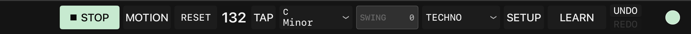
| PLAY / STOP | 録音状態でないときに PLAY を押すと、ボタン内に Y、REC?、N の 3 つが表示され、5 秒後に自動で閉じます。Y は録音して再生、N は再生のみです。再生中はボタンに STOP と表示されます。MIDI Learn に割り当てできます。Y を選ぶと先にストレージの空き容量を確認します。第 14 章を参照してください。 |
| 録音停止ボタン | 録音状態のときだけ表示される赤い点のカプセル型ボタンで、PLAY の左にあります。押すと「STOP RECORDING?」Y / N が表示され、5 秒後に自動で閉じます。生成されるファイルは第 14 章を参照してください。 |
| MOTION | ボタンには MOTION と HOLD RECORD の 2 行が表示されます。タップで MOTION の再生を切り替えます。再生オンのときは黄色（初期状態）、オフのときは無色です。1 秒押し続けると録音を開始します。押している間は赤が左から右へ満ちていき、早く離すかボタンの外へドラッグすると取り消されます。録音中はボタンが赤になり、タップで録音を停止します。録音を開始すると再生は自動でオンになります。MIDI Learn には割り当てできません。第 13 章を参照してください。 |
| RESET | 再生中のみ使用でき、再生位置を先頭に戻します。MIDI Learn に割り当てできます。 |
| BPM | ノブで、20 から 300。上下にドラッグして調整します。ダブルタップでのリセットや、タップでの数値入力はありません。0.6 秒長押しすると MASTER CLOCK ポップオーバーが開き、PROBABILITY フェーダー（ダブルタップで 100%）があります。100% 未満ではステップのトリガーを確率でスキップし、再生位置はそのまま進みます。クロック出力は影響を受けません。PROBABILITY は MIDI Learn、PERFORM、KEYBOARD に割り当てできます。外部クロック使用時はグレー表示になり、受信中のテンポを表示します。プロジェクトの BPM は書き換えられず、クロックソースを INT に戻すと元の値に戻ります。BPM は MIDI Learn に割り当てできます。 |
| TAP | 2 秒の範囲内で最大 4 回のタップを平均します。最後のタップから 5 秒後にバッファを消去します。undo の対象外です。外部クロック使用時は使用できません。 |
| SCALE | 2 階層のメニューです。1 階層目がスケール、2 階層目が 12 のルート音です。ボタンにはルート音とスケール名が表示されます。内蔵 16 種類：Chromatic、Major、Minor、Penta Major、Penta Minor、Dorian、Phrygian、Lydian、Mixolydian、Locrian、Major Triad、Minor Triad、Blues、Arabic、Japanese、Whole Tone。その後にユーザースケールと USER SCALE EDITOR が並びます。メニューではアスタリスクの数で現在の STYLE への適合度を示します。 |
| SWING | 塗りつぶし式の横フェーダー、0 から 100。ダブルタップで 0.5 に戻ります。奇数ステップを stepDuration x 0.25 x swing だけ遅らせます。3 連符のノートは SWING の影響を受けません。MIDI Learn に割り当てできます。 |
| STYLE | ポップオーバー内に AMOUNT ノブ（0 から 1）と 9 種類のスタイルが 2 列で並びます：West African、Afro-Cuban、Brazilian、Balkan、Indian、Gamelan、Electronic、Breakbeat、Techno。AMOUNT とスタイル番号はどちらも MIDI Learn に割り当てできます。 |
| SETUP | SETUP パネルを開閉します。第 11 章を参照してください。 |
| MIDI | MIDI Learn モードを切り替えます。表示は常に MIDI で、オンのときは背景色が変わります。ショートカットは Cmd+L。オンのとき、割り当てできるコントロールに破線の枠が表示されます。MIDI を押すと MOD はオフになります。第 12 章を参照してください。 |
| MOD | MOD モードを切り替えます。MIDI の右にあります。起動時はオフです。オンのときはボタンがアクセントカラーになり、モジュレーションできるコントロールに実線のアクセントカラーの枠が表示されます。枠のあるコントロールをタップしても値は変わらず、MOD ROUTE パネルが開きます。枠のないコントロールは通常どおり操作できます。MIDI とは同時にオンにできません。MIDI Learn には割り当てできません。第 9 章を参照してください。 |
| UNDO / REDO | 取り消す内容がないときは 40% のグレー表示になります。ショートカットは Cmd+Z、Cmd+Shift+Z。PERFORM のレイアウト編集は PERFORM 専用の undo スタックを使います。 |
| HUE | 「HUE」の文字とカラーホイール。ポップオーバーのタイトルは「ACCENT HUE」で、外側のリングをドラッグして色相を、中央の円を縦ドラッグして彩度（0 から 2）を変更します。 |
USER SCALE EDITOR
| CLOSE | エディタを閉じます。 |
| SCALE NAME | スケール名の入力欄です。 |
| ピッチクラスボタン | 12 個、2 行 6 列。グローバルの ROOT に対する相対音です。初期状態でルート音を含みます。 |
| 音程の要約 | 選択した音程を表示します。ピッチクラスを 1 つも選んでいないときは「SELECT AT LEAST ONE PITCH CLASS」と表示されます。 |
| SAVE NEW SCALE / SAVE CHANGES | 新規追加、または変更の保存です。 |
| CANCEL EDIT | 現在の編集を取り消します。 |
| SAVED USER SCALES | 保存済みスケールの一覧です。空のときは「No user scales saved yet.」と表示されます。各項目に SELECT、EDIT、DELETE があります。使用中のスケールを削除すると、グローバルスケールは Chromatic に戻ります。 |
4. MAIN
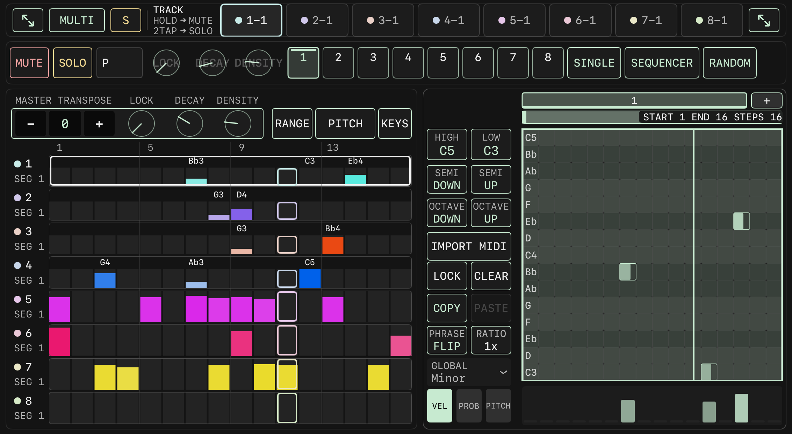
トラックタブ列
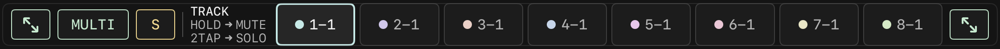
| 全画面ボタン | 列の両端にある斜め矢印のボタンで、エディタの全画面表示を開閉します。 |
| MULTI | 複数トラックの同期編集です。有効時、同期中のノブには破線のリングが表示されます。GLOBAL グループの MULTI を PERFORM、MIDI、KEYBOARD に割り当てできます。MAIN ページを表示しているときだけ働きます。 |
| S | 全トラックのソロを解除します。対応する割り当て先は GLOBAL グループの UN-SOLO ALL です。 |
| トラックタブ | タップでトラックを選択。0.35 秒以内のダブルタップで SOLO 切り替え、0.45 秒の長押しで MUTE 切り替えです。タブの表示はトラック番号と現在のセグメント（例：1-1）です。 |
パラメータ列
| MUTE / SOLO | 現在のトラックのミュートとソロです。 |
| P | Program メニュー：SAVE、LOAD、CLEAR。対象は Program 1 から 8 です。 |
| LOCK | 0 から 100%。縦ドラッグです。ダブルタップによるリセットはありません。 |
| DECAY | ディケイの時間倍率で、全トラック 0.2 から 2.0（1.0 が 44% と表示）です。上げるとディケイが長くなり、メロディトラックではテールが音符の長さを超えて、同じトラックの次の音が鳴るまで伸びます。ダブルタップで 1.0 にリセットします。 |
| DENSITY | 0 から 100%。ダブルタップでセグメントの上書き値を消去します。 |
| セグメント 1 から 8 | 3 つの状態：なし、空、内容あり。RATIO があるときはラベルを表示します。チェーン状態は下端の 3pt バー、再生中は上端の 3pt ラインで示します。タップの優先順位：チェーン設定中、RANDOM プール、MULTI、選択の順です。 |
| << / >> | 8 つのセグメントスロットの左右に 1 つずつあります。現在のトラックの前または次の保存済み Program（1 から 8）を読み込みます。空のものは飛ばし、端で折り返しません。読み込めるものがないときはグレー表示で無効になります。まだ Program を読み込んでいないときは、>> は Program 1 から、<< は Program 8 から探します。長押しで MIDI Learn でき、PERFORM と KEYBOARD の割り当て先は PREVIOUS PROGRAM / NEXT PROGRAM です。 |
| SINGLE | 現在のセグメントだけを再生します。表示は SEG n です。 |
| SEQUENCER | START、開始スロット、END、終了スロットの順にタップすると、SEQ a-b と表示されます。 |
| RANDOM | CHOOSE と表示され、スロットをタップしてランダムプールに追加または除外します。 |
| FOLLOW | ドラムトラック専用。ペアになったメロディトラックのセグメントに追従します。 |
左カラム
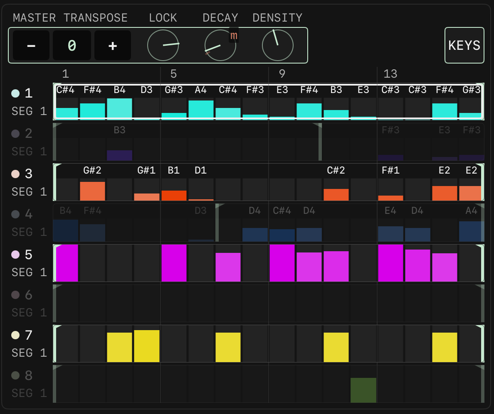
| MASTER TRANSPOSE | 左から「-」、数値欄、「+」です。数値欄はタップで数値を入力、縦ドラッグで値を変更します。範囲は ±24 半音です。 |
| MASTER LOCK / DECAY / DENSITY | 8 トラックすべての対応するパラメータに同時に書き込みます。 |
| KEYS | 見出し行の右にある唯一のボタンです。オンにするとトラックバーが鍵盤に切り替わります。下の KEYS モードを参照してください。 |
| トラックバー | そのトラックの現在の小節の内容を表示します。ドラムトラックは柱の高さがベロシティ、メロディトラックは柱の高さが音高の位置、濃淡がベロシティです。再生範囲外のマスは暗くなります。ステップ目盛りは現在の小節のステップ番号で、ページは右のエディタと連動します。トラックバーは表示専用で、ノートは右のエディタで入力します。 |
| 範囲ハンドル | 各トラックバーの両端のハンドルは常に表示されます。ドラッグして再生ウィンドウの始点と終点を設定し、ドラッグ中はそのトラックの開始と終了のステップが表示されます。ハンドルを端で止めるとページが切り替わります。最大 4 本指で同時にドラッグできます。 |
| 3 連符マーカー | そのセグメントに 3 連符のノートがあるとき、トラックバーの 2 マスごとの下部に細い 3 等分のマーカーが表示されます。1 つ目はストレートのステップと共通のため別には描かれません。2 つ目と 3 つ目にノートがあるとトラックの色で塗られ、濃淡がベロシティを示します。 |
トラックバーは長押しに対応していません。
フレーズエディタ（TRACK 1 から 4）
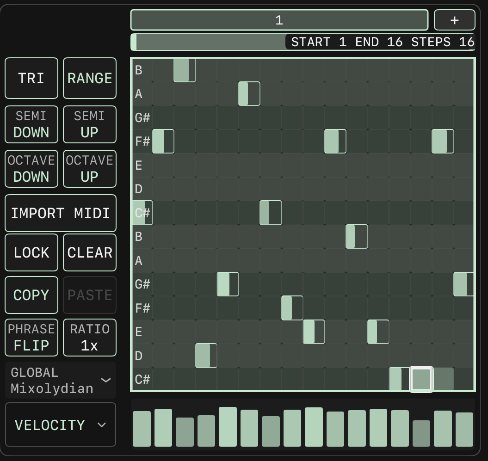
左のボタン列は上から順に：DELAY フェーダーと SYNC（TRACK DELAY）、FOLLOW（小節が複数あるときのみ表示）、TRI と RANGE、SEMI DOWN と SEMI UP、OCTAVE DOWN と OCTAVE UP、IMPORT MIDI、LOCK と CLEAR、COPY と PASTE、PHRASE FLIP と RATIO、SCALE メニュー、最下段のレーンのドロップダウンと EDIT。
| 小節列 | 1 ページが 1 小節 16 ステップで、最大 64 小節です。ページ番号をタップして切り替えます。0.6 秒長押しすると「DELETE BAR n?」Y / N が表示されます。「+」で小節を追加します。8 小節を超えると 8 個ずつ表示され、両端に切り替えボタンが付きます。全画面ではすべての小節が表示されます。再生中の小節は下部に色の帯が付きます。 |
| 全画面 | 全画面では 2 小節を同時に表示し、端でのページ送りは 2 小節ずつになります。ページ番号、1 BAR の COPY / PASTE、小節の削除は 1 小節単位のままです。 |
| 端でのページ送り | ノートを横に伸ばすとき、レーンを横になぞるとき、START / END をドラッグするときに、端で 0.3 秒止めると自動でページが切り替わります。縦の音高変更ではページは切り替わりません。 |
| START / END | 再生の開始と終了のステップを設定し、「START n END m STEPS k」と表示します。16 ステップを超えると BARS が、RATIO が 1x でないときは RATE が加わります。 |
| FOLLOW | ページを再生に追従させます。このボタンでのみ切り替わります。 |
| TRI | 3 連符グリッドを切り替えます。下の「TRI 3 連符グリッド」を参照してください。 |
| RANGE | PITCH RANGE ウィンドウを開きます。HIGH と LOW の 2 つの欄があり、音域の上限と下限です。タップで音名を入力、縦ドラッグで 24px ごとに 1 半音変わり、2 つの欄は同時にドラッグできます。HIGH は LOW より少なくとも 1 半音高くなります。ウィンドウの外をタップすると閉じます。 |
| SEMI DOWN / UP | セグメント全体を ±1 半音移調します。限界に達すると使用できません。3 連符のノートも一緒に移調されます。 |
| OCTAVE DOWN / UP | セグメント全体を ±12 半音移調します。限界に達すると使用できません。3 連符のノートも一緒に移調されます。 |
| IMPORT MIDI | .mid ファイルを読み込みます。完了すると「IMPORTED n NOTE(S)」、スキップがあれば「SKIPPED m」が加わります。エラーは赤字で表示されます。メッセージは 4 秒後に消えます。3 連符のノートには影響しません。 |
| LOCK | ロックモードの切り替えです。 |
| CLEAR | 2 段階式です。「CLEAR LOCK?」が表示され、Y でロックを含むすべてのノートを消去、N でロックされていないノートのみ消去します。3 連符のノートも同じ扱いです。5 秒後に自動で取り消されます。 |
| COPY | 「COPY BAR n OR ALL?」が表示され、1 BAR または ALL を選びます。3 連符のノートも一緒にコピーされます。 |
| PASTE | トラックをまたいで貼り付けできます。貼り付け後もクリップボードは保持されます。コピー元に 3 連符がない場合、貼り付け先の 3 連符は消去されます。 |
| PHRASE FLIP | 再生ウィンドウ内のフレーズを反転します。2 ステップ以上が必要です。3 連符のノートも一緒に反転されます。 |
| RATIO | ボタンには RATIO と現在の値が表示されます。15 の選択肢：x8、x6、x4、x3、x2.5、x2、x1.5、1x、/1.5、/2、/2.5、/3、/4、/6、/8。3 連符も同じ比率で伸縮します。 |
| SCALE | セグメントのスケールメニューです。GLOBAL、内蔵スケール、ユーザースケールがあり、それぞれ 12 のルート音を選べます。 |
| レーンのドロップダウン | ボタン列の最下段の左半分にあり、ノートグリッドの下に表示するレーンを選びます。7 項目あります。下の表を参照してください。 |
| EDIT | 同じ段の右半分、レーンのドロップダウンの隣にあります。背の高いパラメータ編集エリアを開きます。下の「EDIT パラメータ編集エリア」を参照してください。 |
| TRACK DELAY | 左列最上段の DELAY フェーダーと SYNC で、TRACK 1 から 4 のみです。トラック全体のトリガーを遅らせ、MIDI OUT と CV OUT も一緒に遅れます。再生ヘッドは遅れません。SYNC オフでは 0 から 500 ミリ秒、SYNC オンでは拍の値 0、1/64、1/32、1/16T、1/16、1/8T、1/8、1/4T、1/4、1/2、1 BAR です。遅らせる方向のみで、2 つのモードはそれぞれ自分の値を記憶します。フェーダーの面に現在値が表示されます。フェーダーは MIDI Learn（PICKUP で引き継ぎ）、MOTION の記録、MOD ROUTE に対応します。SYNC はオン / オフのボタンで、MOTION は記録しません。PERFORM の VOICE グループに TRACK DELAY と TRACK DELAY SYNC の 2 つの割り当て先があります。 |
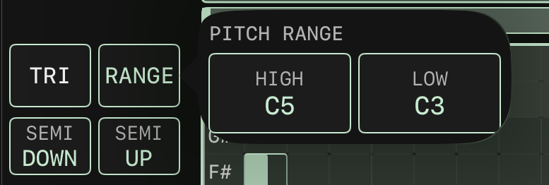
レーン
| VELOCITY | 1 から 127。ドラッグ中は「VELOCITY n」と表示されます。新しいノートは 100 です。 |
| PROBABILITY | 0 から 100%。「PROB nn%」と表示されます。初期値 100%。 |
| PITCH PROBABILITY | 0 から 100%。「PITCH nn%」と表示されます。ランダムな音高になる確率です。初期値 0。 |
| DECAY | 0 から 100%。「DECAY nn%」と表示されます。初期値 50% で、そのセグメントの DECAY に従います。50% より低いと短く、高いと長くなります。 |
| RATCHET | 0 から 100%。「RATCHET nn%」と表示されます。そのステップで連続トリガーが起こる確率です。初期値 0。 |
| RATCHET COUNT | 連続トリガーの回数で、9 段階：2、3、4、6、8、12、16、24、32。「COUNT n」と表示されます。初期値 2。RATCHET が 0 のノートは、このレーンの柱が薄く表示されますが、編集はできます。 |
| RATCHET COUNT PROBABILITY | 0 から 100%。「COUNT PROB nn%」と表示されます。初期値 0。RATCHET が起こったときにもう一度判定します。成立した場合は回数がランダムになり、1 と設定した COUNT 以下の各段階から選ばれます。1 が選ばれるとそのステップは連続トリガーしません。成立しない場合は設定した COUNT に従います。 |
すべてのレーンは縦ドラッグと 1 本指の横なぞりに対応しています。ロックされたノートの DECAY と RATCHET の値は自動生成で変更されません。
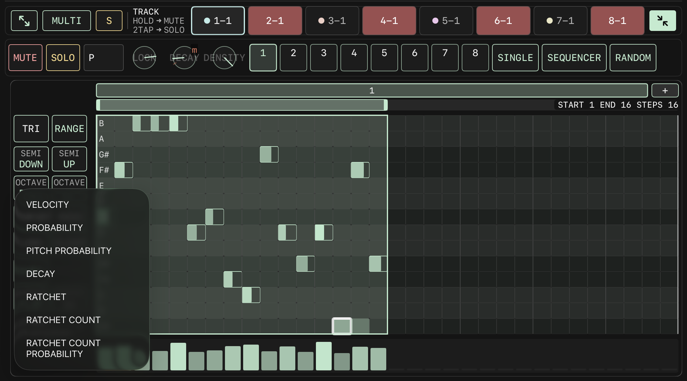
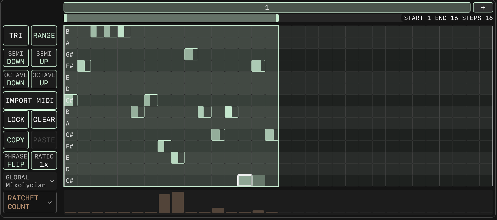
EDIT パラメータ編集エリア
左のボタン列の最下段は 2 つに分かれています。左半分がレーンのドロップダウン、右半分が EDIT ボタンで、TRACK 1 から 8 のすべてにあります。EDIT を押すと背の高いパラメータ編集エリアが開きます。上のノートグリッドは高さが半分になり、下の空いた部分が編集エリアになります。もう一度押すと閉じ、ノートグリッドは元の高さに戻ります。EDIT を開いたままでもレーンのドロップダウンは使え、編集エリアは選んだパラメータに追従します。
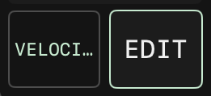
TRACK 1 から 4 の編集エリアは従来と同じレーンで、高さだけが増えます。ジェスチャーは変わらず、縦ドラッグと 1 本指の横なぞりです。編集エリアの最上部には、そのパラメータの色でパラメータの正式名称を表示する行があります。この行は表示のみでタッチには反応しません。ドロップダウンは半分の幅になったため文字が縮むことがありますが、この行は常に正式名称を省略せずに表示します。
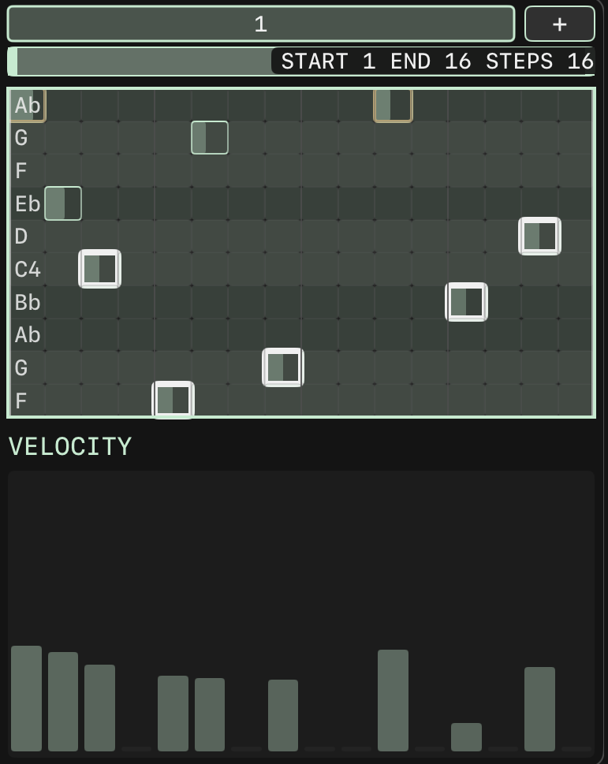
TRI 3 連符グリッド
- TRI は表示と編集に使うグリッドだけを切り替えます。ストレートのノートと 3 連符のノートは別々のデータで、TRI のオン、オフにかかわらず両方とも再生されます。
- メロディトラックの TRI は現在のトラックだけに作用し、トラックごとに記憶されます。TRI のオン、オフは保存されず、アプリを再起動するとオフになります。
- TRI がオンのとき、1 小節は 16 列から 24 列になります。ストレートの 2 ステップごとに 3 マスに分かれます。各組の最初のマスは、ストレートの偶数ステップと同じノートです。
- TRI がオンのとき、ストレートの奇数ステップのノートは元の時間位置に薄い破線の枠で表示され、編集できません。TRI がオフのとき、3 連符のノートは薄い破線の枠で表示され、編集できません。
- 3 連符のマスで使えるレーン：VELOCITY、PROBABILITY、DECAY。PITCH PROBABILITY と 3 つの RATCHET レーンは 3 連符には適用されず、レーンの右上に「NOT AVAILABLE ON TRIPLET」と表示されます。ストレートの列は引き続き編集できます。
- 新しく作った 3 連符のノートはベロシティ 100 で、作成時にロックされます。
- 3 連符のノートは SWING の影響を受けず、ランダムな音高と連続トリガーはありません。MUTE、SOLO、DENSITY が 0 のときは同様に発音しません。
- 自動生成は 3 連符のノートを作成も消去もしません。小節を削除すると 3 連符も一緒に削除されます。
- 3 連符はセグメントとともに保存され、.honki ファイルに含まれます。旧バージョンのファイルも読み込めます。
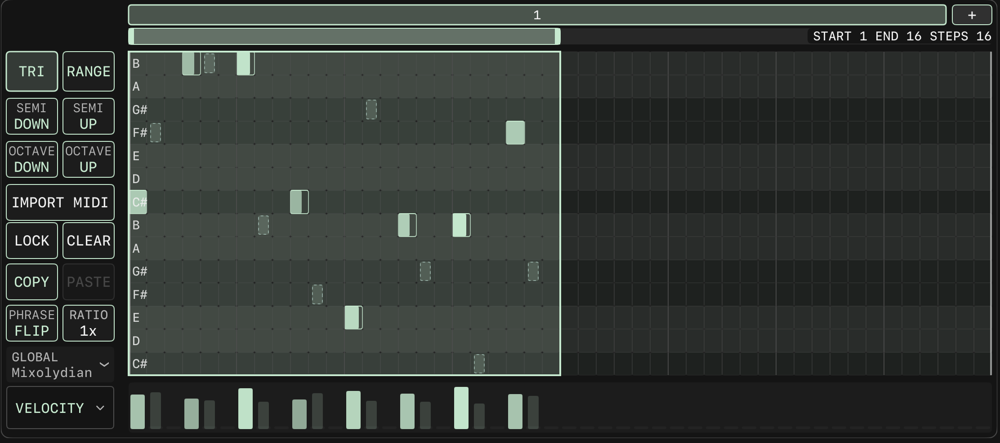
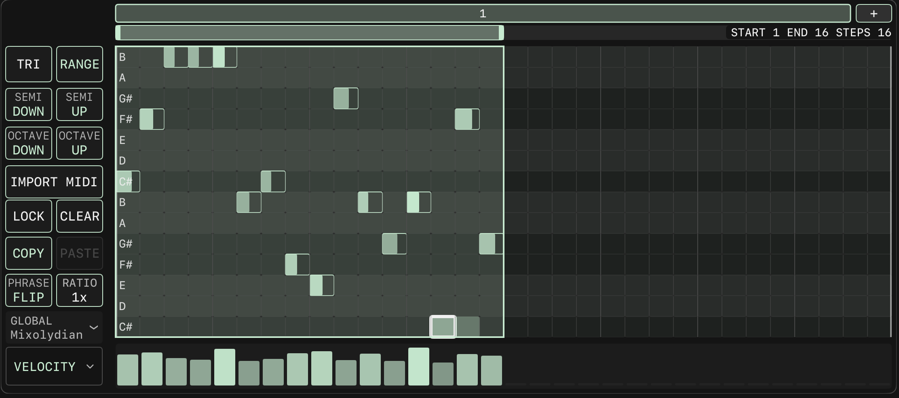
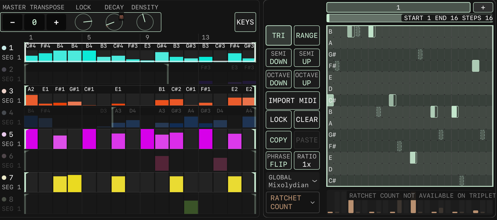
ノートグリッドのジェスチャー
- 行は音域内のスケール音です。ノートの幅がゲート、透明度がベロシティです。
- スケール外のノートには 2pt の警告枠、ロックされたノートには 4pt の枠が表示されます。
- 空のマスをタップするとノートを作成します（ベロシティ 100、ゲート 0.5）。作成時にロックされます。ノートをタップすると削除します。ロック状態は保持されます。
- 8pt を超える縦ドラッグで音高を、横ドラッグでゲート（0.01 から 16）を変更します。最大 4 本指で同時に操作できます。空のマスから始めたドラッグではノートは作成されません。
- 小節をまたぐ長いノート：ノートを右端まで伸ばし、止めて次のページに切り替わると、さらに伸ばせます。前のページから始まる長いノートは、このページに伸びている部分が左端から薄い色で描かれます。
- LOCK モードでは、ノートをタップしてロックを切り替える操作のみできます。
手動で入力したノートは初期状態でロックされ、LOCK ノブと自動生成の影響を受けません。ロックされたノートは CLEAR の後に Y を選んだときだけ消去されます。
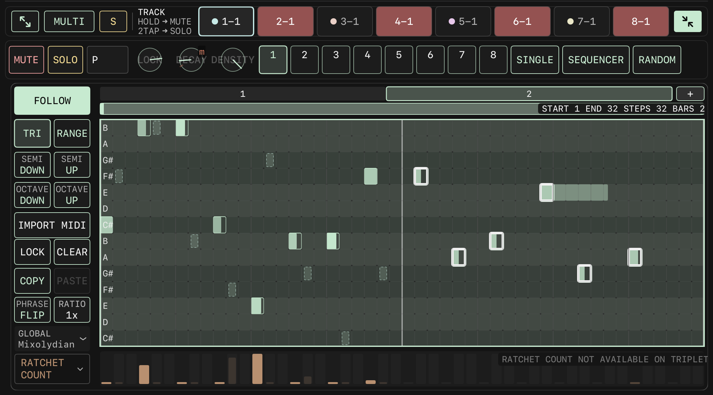
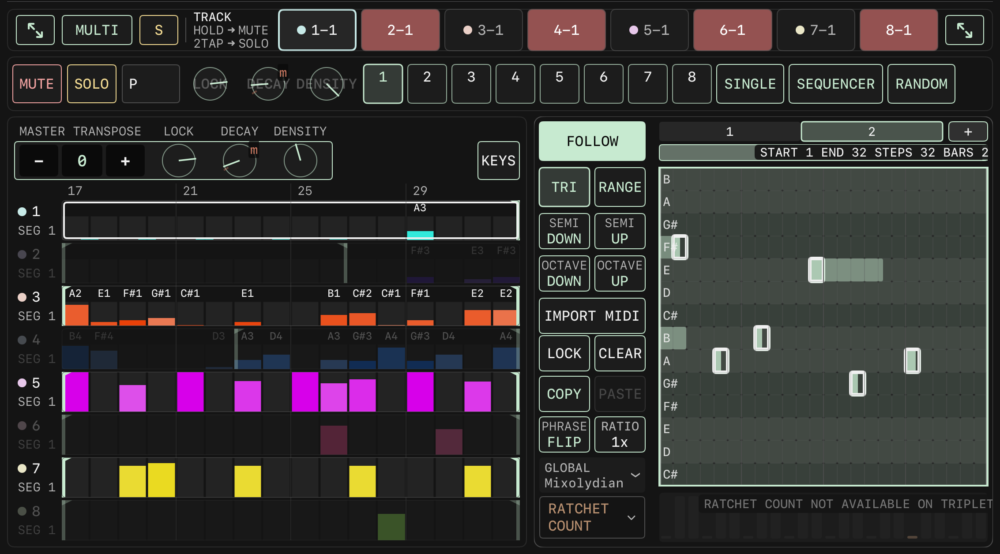
DRUMS エディタ（TRACK 5 から 8）
| グループの並び | 上から順に：TRACK 8 LEAD、7 TIMELINE、6 GROOVE、5 FOUNDATION。 |
| ボイス行 | TRACK 5：Kick、Low Tom。TRACK 6：Snare、Mid Tom、Clap。TRACK 7：HH Closed、HH Open。TRACK 8：High Tom、Crash。名前は STYLE によって変わります。 |
| ページ | 4 トラックで小節のページを共有します。全画面では 2 小節を同時に表示し、端でのページ送りは 2 小節ずつになります。 |
| 左のスライダー | VARIATION、REST、GHOST、ACCENT、FILL。各 0 から 1 で、対象トラックに作用します。 |
| 対象トラック | 各スライダーの横に 2x2 のマスがあり、TRACK 5 から 8 を選びます。ポップオーバーのタイトルは TARGET TRACK で、少なくとも 1 トラックは選択されたままになります。 |
| LOCK | ロックモードの切り替えです。 |
| CLEAR | まず WHICH TRACK?（ALL / 8 / 7 / 6 / 5）、次に CLEAR LOCK? Y / N を確認します。N はロックされていないノートのみ（3 連符を含む）を消去し、Y はすべて消去します。 |
| COPY / PASTE | 4 トラックをひと組としてコピー、貼り付けします。3 連符のノートも一緒にコピーされます。 |
| RATIO | 行全体で 1 つのボタンです。ボタンの右側に 4 トラック共通の値が表示され、トラックごとに異なるときは MIXED と表示されます。ポップオーバーのタイトルは「RATIO TRACK n」で、左に 5、6、7、8 の 4 つのトラックボタン（それぞれ現在の値を表示）、右に 15 の比率があります。比率を選んでもポップオーバーは閉じず、続けて他のトラックを設定できます。ポップオーバーの外をタップすると閉じます。 |
| TRI | 行全体で 1 つのボタンで、4 トラックを一緒に切り替えます。オフのトラックが 1 つでもあるときに押すと 4 トラックすべてがオン、すべてオンのときに押すとすべてオフになります。4 トラックすべてがオンのときだけ点灯します。グリッドのルールはメロディトラックと同じです。 |
| レーンのドロップダウン | ボタン列の最下段の左半分にあります。6 項目：VELOCITY、PROBABILITY、DECAY、RATCHET、RATCHET COUNT、RATCHET COUNT PROBABILITY。値の定義はメロディトラックと同じです。ドラムトラックの DECAY と 3 つの RATCHET の値は、同じステップのすべてのボイスで共通です。3 連符のマスでは VELOCITY、PROBABILITY、DECAY のみ使えます。 |
| EDIT | 同じ段の右半分、レーンのドロップダウンの隣にあります。パラメータ編集エリアを開きます。下の「ドラムトラックの EDIT パラメータ編集エリア」を参照してください。 |
| スタイル帯 | グループごとに 1 本あり、GLOBAL または特定のスタイルを選びます。MIDI Learn に割り当てできます。 |
ドラムグリッドのジェスチャー：タップでヒットを切り替え（ベロシティ 100）、8pt を超える縦ドラッグで現在のレーンの値を変更、横スワイプで連続して塗り、LOCK モードではタップでロックを切り替えます。ドラムグリッドには音高とノートの長さのジェスチャーはありません。手動で入力した 3 連符のヒットは作成時にロックされます。
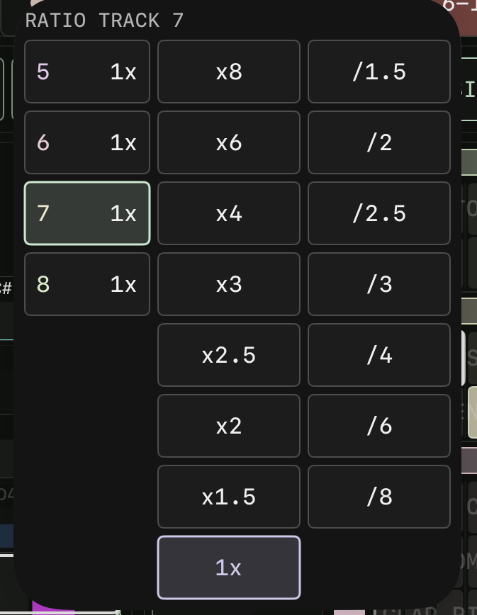
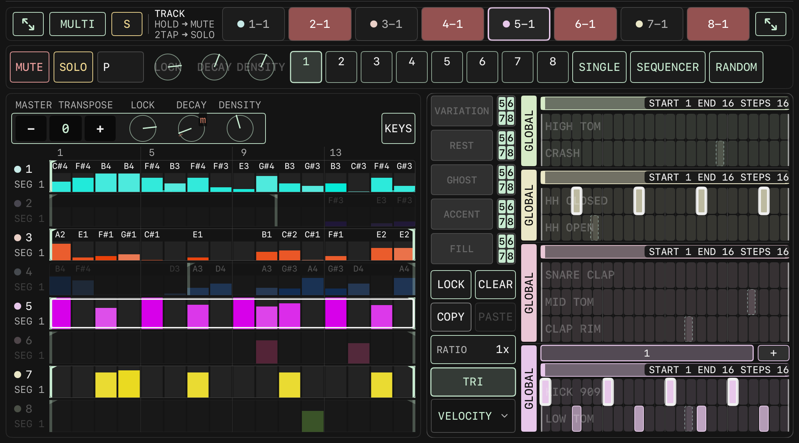
ドラムトラックの EDIT パラメータ編集エリア
EDIT をオンにすると、右側には現在選んでいるトラックのグループだけが表示され、そのボイス行は高くなります。下半分は編集エリアになり、ボイスごとに 1 組ずつ交互に並びます。1 本目のボイスの音色名の行（名前の横に現在のパラメータ名）、続いてそのボイスのパラメータ編集行、次に 2 本目のボイスの音色名とそのパラメータ行、という順で下に続きます。編集エリアの列は上のグリッドの列と 1 列ずつ揃っています。
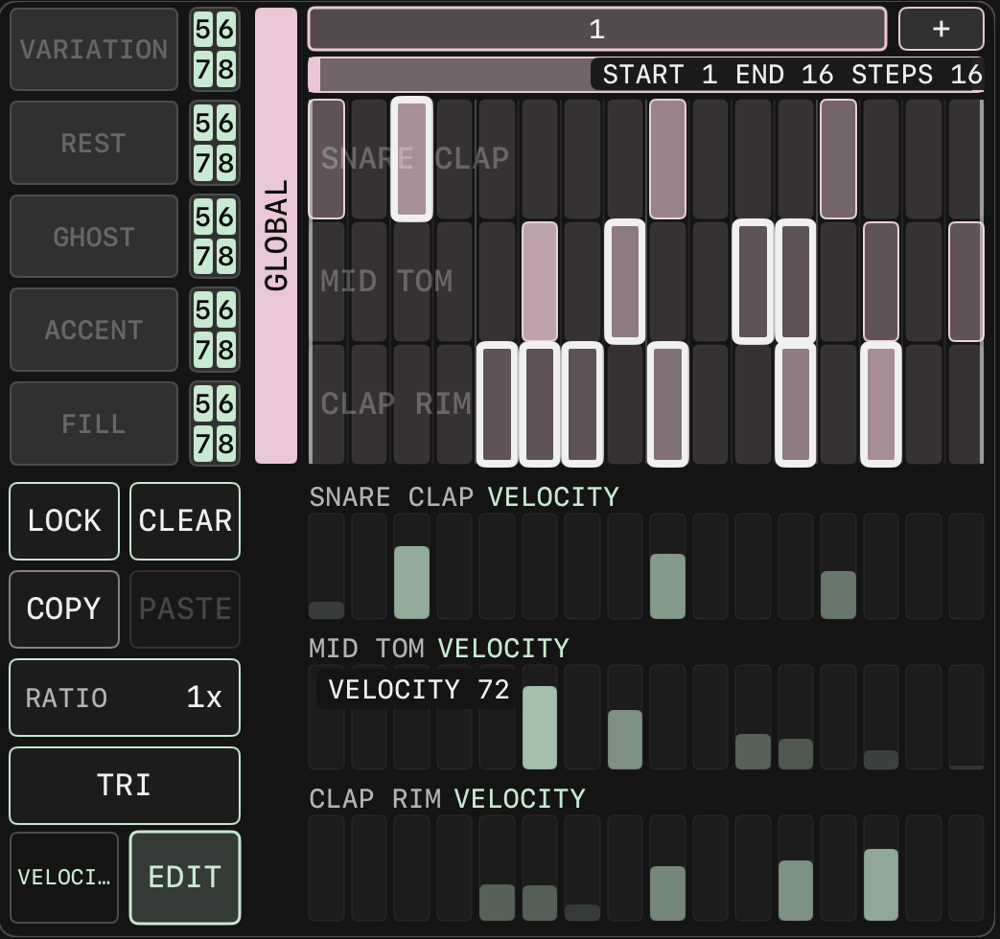
パラメータ編集行は 1 列が 1 本のバーで、バーの高さが現在の値です。指を置いた高さがそのまま値になります。行の上端が最大値、下端が最小値です。これは相対的なドラッグではなく絶対的な位置で、値は指の位置に直接移動します。ドラッグ中は行の左上に数値が表示され、指を離すと消えます。最大 4 本指で別々の列を同時にドラッグできます。ヒットのないステップは空のままで、ドラッグでノートが作成されることはありません。再生範囲外とループ範囲外の列は淡く描かれます。
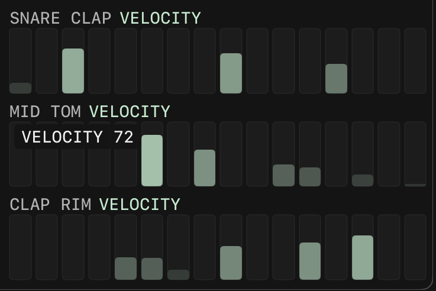
RATCHET、RATCHET COUNT、RATCHET COUNT PROBABILITY は 3 連符には適用されません。3 連符グリッドがオンのとき、この 3 つのパラメータの 3 連符の列は無効なスロットとして描かれ、タッチに反応しません。ストレートの列は引き続き編集できます。VELOCITY、PROBABILITY、DECAY は 3 連符の列でも編集できます。
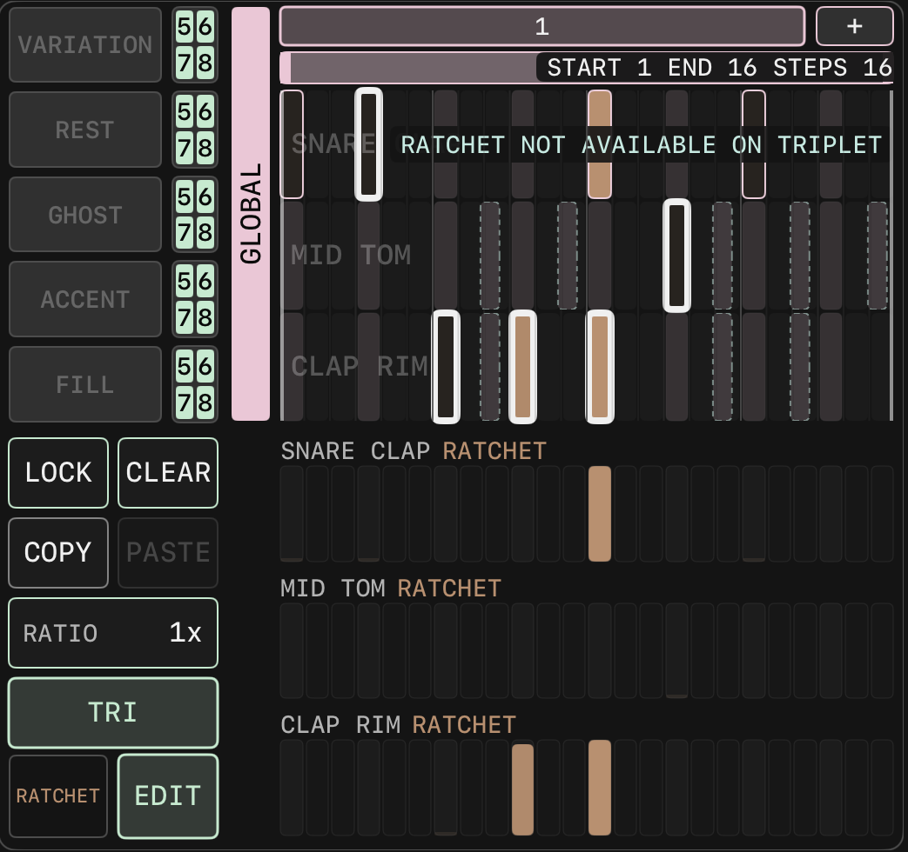
EDIT の編集行のバーとグリッドのマス上の縦ドラッグは同じ値を書き込み、どちらで操作しても変わるのは同じデータです。グリッドのマスは従来どおり相対的なドラッグで、絶対的な位置を使うのは EDIT の編集行だけです。
EDIT エリアの各レーン名の行の右端に MUTE ボタンがあります。ミュートしたレーンは暗く表示され、現在の音源が対応していないときはボタンがグレー表示になります。MUTE で止まるのは内部の音だけで、MIDI と CV の出力は続きます。PERFORM の MAPPING パネルの MIXER グループで割り当てできます。
KEYS モード
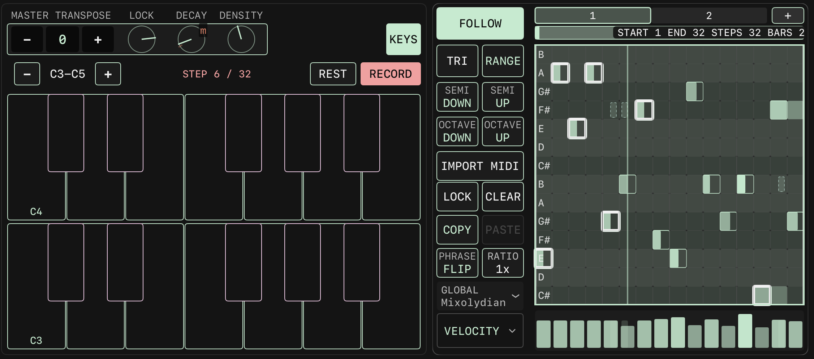
| OCTAVE - / + | 鍵盤に表示するオクターブを移動します。 |
| 状態 | STEP n/m、PLAYING、RECORDING、AUDITION。 |
| REST | ステップ録音中に休符を入力します。 |
| RECORD | 録音を切り替えます。 |
| 鍵盤 | 単音です。ドラムトラックでは使用できず、案内の文字が表示されます。CV エンジンが動作中は、鍵盤を押すとピッチ CV（鍵盤の音高にトラックの TRANSPOSE と全体の TRANSPOSE を加えたもの）とエンベロープ CV を出力します。MIDI OUT は送らず、サステインはありません。 |
KEYS がオンで再生を停止しているとき、右のノートグリッドにはステップ入力位置のマスに縦線が表示されます。鍵盤のステップ入力はストレートのノートだけを書き込みます。
5. VOICE
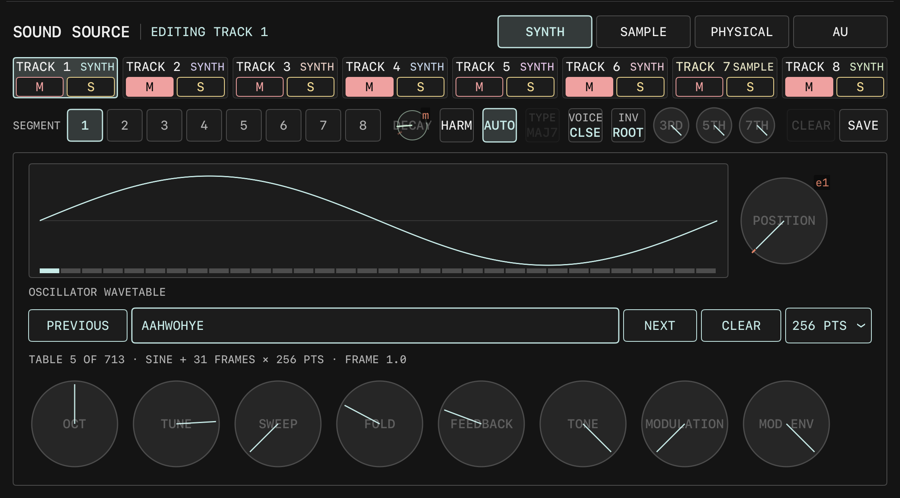
ヘッダーとトラックセル
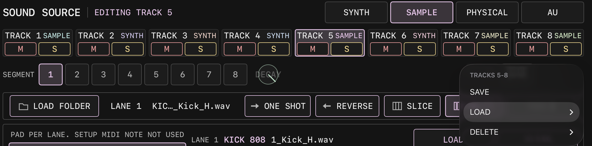
| 音源ボタン | SYNTH、SAMPLE、PHYSICAL、AU から 1 つを選びます。 |
| TRACK セル | トラック名と音源を表示します。M はミュート、S はソロで、0.4 秒長押しで排他ソロになります。状態は MIXER と共有です。トラックを切り替えたとき、別のトラックが RECORD 中なら停止します。 |
| SEGMENT 1 から 8 | 編集するセグメントを選びます。音色メモリのあるセグメントには点が表示されます。 |
| DECAY | 現在のトラックの DECAY で、MAIN と同じです。 |
| CLEAR | 現在のセグメントの音色メモリを消去します。 |
| SAVE | 現在のパネルのパラメータ（ハーモニー設定を含む）をセグメントメモリに保存します。 |
| DRUM KIT | 編集中のトラックの音源が SAMPLE のとき、SAVE の右に表示されます。押すと SAVE、LOAD、DELETE のメニューが開きます。ドラムキットは TRACK 5 から 8 の MULTI 設定一式で、MULTI のオン / オフ、パッド数、読み込み済みの各パッドのオーディオファイルとパッドパラメータを含みます。SAVE では名前を入力し（初期値は「Kit」と日時）、同じ名前があるときは自動で番号が付きます。オーディオファイルはキットのフォルダにコピーされるため、元のファイルを移動してもキットはそのまま使えます。LOAD には保存日時とともにキットが並び、先頭は内蔵の Acoustic キットで、読み取り専用のため削除できません。読み込むと TRACK 5 から 8 が SAMPLE に切り替わり、パッドが消去され、MULTI が有効になってキットのパッドが読み込まれます。DELETE は確認のうえでキットとそのオーディオファイルを削除します。LOAD と DELETE は先に SAVE しなくても一覧を開けます。一覧に出すものがないときは「No kits」と表示されます。キットは iPad では Documents / DrumKits に保存され、「ファイル」アプリで確認できます。Mac では録音フォルダ内の DrumKits に保存されます（録音フォルダを選んでいないときはアプリ内部に保存されます）。キットはプロジェクトの一部ではありません。 |
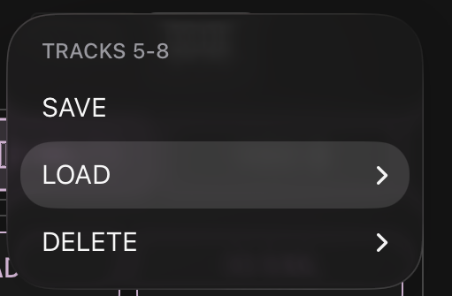
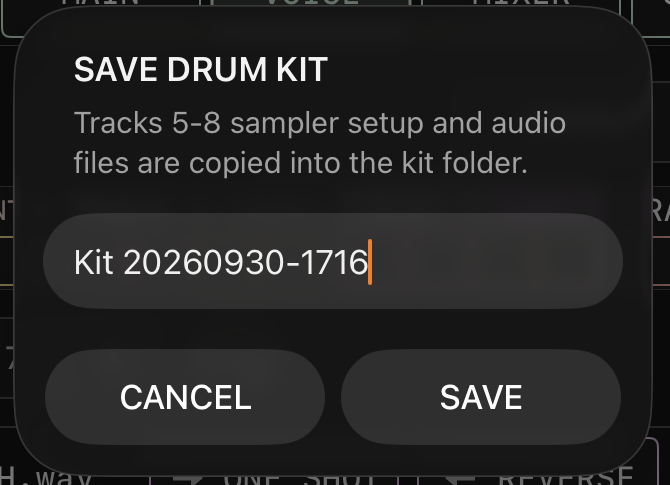
パネル編集の規則：現在のセグメントにメモリがあるときは、パネルの変更はメモリの内容に対して行われます。メモリがないときはトラックのベースに対して行われます。セグメントメモリには MULTI のオン / オフ、パッド数、36 個すべてのパッドのパラメータも含まれます。メモリのあるセグメントで LOAD からサンプル（単一サンプルまたは MULTI のパッド）を読み込むと、そのセグメントメモリに書き込まれ、Undo できます。メモリがないときはトラックのベースに書き込まれます。サンプルはバックグラウンドで読み込まれ、その間は LOADING と表示されます。サンプルを入れ替えると、前の音は最後まで鳴り、新しいファイルは次のトリガーから再生されます。サンプルの録音、PHYSICAL の MODEL と POLYPHONY、AU の読み込みはトラックのベースに作用します。SLICE と MULTI はトラック単位の設定で、互いに排他です。セグメントメモリを編集中は、パネルに「EDITING SEGMENT n MEMORY」の透かしが表示されます。
NOTE HARMONIC（SAMPLE 以外の音源）
| HARM | ハーモニーのオン / オフです。 |
| AUTO | コードタイプを自動選択します。有効時は TYPE がグレー表示になります。 |
| TYPE | タップでコードタイプを順に切り替えます。 |
| VOICE | CLSE、DRP2、DRP3、OPEN。 |
| INV | ROOT、1ST、2ND、3RD。 |
| 3RD / 5TH / 7TH | 各 0 から 1 のノブ。MOTION の記録と MOD ROUTE に対応します。 |
SYNTH
TRACK 1 から 5 はウェーブテーブルシンセサイザーで、タイトルは「OSCILLATOR WAVETABLE」、TRACK 5 のタイトルは「KICK VOICE WAVETABLE」です。TRACK 6 から 8 は固定のドラムシンセサイザーで、パネルには「BUILT-IN DRUM SYNTHESIZER WITH FIXED SOUNDS FOR THIS TRACK.」と表示されます。
| オシレーター | キャリア（主オシレーター）がウェーブテーブルを読みます。ウェーブテーブルを読み込んでいないときは純粋なサイン波で動作し、状態テキストに「NO WAVETABLE — OSCILLATOR RUNS AS PURE SINE」と表示されます。読み込むとキャリアと PM モジュレーターの両方が同じテーブルの同じフレームを読みます。 |
| 波形表示 | 現在の POSITION におけるフレームの波形を表示します。POSITION が MOTION、MIDI、PERFORM でモジュレーションされているときは、表示もリアルタイムで追従します。 |
| POSITION ノブ | 波形表示の右側にあります。0 から 1、初期値 0。フレーム間のモーフ位置で、左端（フレーム 0）は純粋なサイン波、右へ回すとファイルのフレームへモーフします。TRACK 5 の BYPASS がオンのとき、またはウェーブテーブルがないときは無効になります。 |
| BYPASS | TRACK 5 のみ。有効時は FOLD、FEEDBACK、TONE、MODULATION の 4 つのノブが無効になり、フレーム点数の選択もロックされます。 |
| PREVIOUS / NEXT | 前または次のウェーブテーブルに切り替えます。 |
| 名前ボタン | 「SELECT WAVETABLE」ポップオーバーを開きます。フィルター欄と「NO WAVETABLE」項目があります。 |
| CLEAR | ウェーブテーブルを外します。オシレーターは純粋なサイン波に戻ります。 |
| フレーム点数 | 「N PTS」の選択メニュー。256 / 512 / 1024 / 2048 / 4096 から選び、初期値は 2048 です。1 周期が 2048 点より短いウェーブテーブルは、点数を小さくしてピッチの上ずりを補正します。変更すると、そのトラックのウェーブテーブルが再読み込みされます。 |
| OCT | -4 から +4。 |
| TUNE | ±100 セント。 |
| SWEEP | 0 から 1000 Hz。TRACK 5 は -500 から +500 のオフセットです。 |
| FOLD | 0 から 10。 |
| FEEDBACK | 0 から 1。 |
| TONE | 0 から 10。 |
| MODULATION | 0 から 10。0 のときウェーブテーブルは作用しません。 |
| MOD ENV | 0 から 10。TRACK 5 は -5 から +5 です。 |
フレーム 0 は常にサイン波で、ファイルのフレームは 1 から始まります。ウェーブテーブルはサイン波を含めて最大 32 フレームです。TRACK 5 の FOLD、TONE、FEEDBACK、MODULATION は、ユーザーがパラメータに触れるまで STYLE の初期値に追従します。
SAMPLE
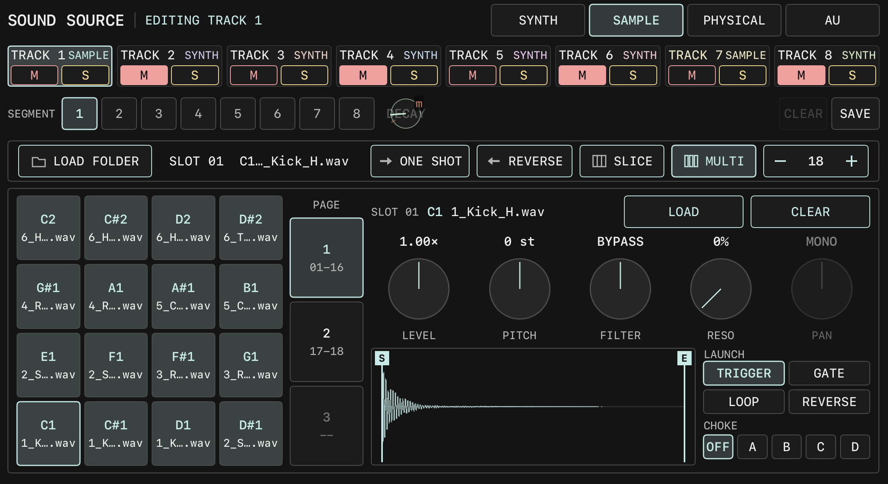
ファイル列
| LOAD SAMPLE | 単一のサンプルを読み込みます（通常モードと SLICE モード）。 |
| RECORD / STOP | マスター出力をサンプルとして録音します。上限は 120 秒で、録音中は「RECORDING x.x s」と表示されます。停止後に自動で読み込まれます。 |
| ファイル名 | 現在のサンプルのファイル名を表示します。サンプルがないときは「NO SAMPLE」と表示されます。 |
| LOAD FOLDER | MULTI モードでフォルダ全体を読み込みます。wav、aif、aiff、mp3、m4a、caf、flac に対応し、最大 36 個です。 |
| ONE SHOT / LOOP | ボタンを押すたびに ONE SHOT、LOOP、SYNC LOOP の順に切り替わります。SYNC LOOP ではループの長さが BPM に追従し、音程は変わりません。右側の「- n +」は拍数（1 から 128）になります。拍数は LOAD や録音のときに自動で推定されます。SYNC LOOP は単一サンプルの通常再生だけが対象で、MULTI、SLICE、グラニュラー合成には使えません。同期中は REVERSE が働きません。 |
| REVERSE | 逆再生です。 |
| SLICE | サンプルを N 等分し、C1（24）からのノートを各スライスに対応させます。ドラムトラックでは「DRUM TRACK: SLICE FOLLOWS SETUP MIDI NOTE」と表示されます。 |
| MULTI | マルチサンプルのパッドモードです。8 トラックすべてで使えます。 |
| - n + | MULTI ではスロット数（1 から 36）、SLICE ではスライス数（2 から 36）です。ドラムトラックでは固定で、「PADS n」と表示されます。SYNC LOOP では拍数で、1 から 128 です。 |
通常モードと SLICE モード
| 波形 | S / E マーカーで開始点と終了点を設定します。2 本指で同時にドラッグできます。SLICE ではスライスの境界を表示します。開始点と終了点の MOTION は MOD モードで消去します。トランスポートの MOD をオンにして波形をタップし、パネルの CLEAR MOTION? で Y を選びます。 |
| GRAIN SIZE x DENSITY | グラニュラー合成のメイン XY パッドです。GRAIN SIZE は 0.005 から 2 秒、DENSITY は毎秒 1 から 200 で、1 が通常再生です。各軸に - / + とロックがあります。 |
| SPRAY x JITTER | グラニュラー合成の詳細 XY パッドで、各 0 から 100% です。 |
| GRAIN SHAPE | 0 から 100%。 |
| PITCH | ±48 半音。 |
| GAIN | 0 から 8。 |
MULTI モード
| パッド | 1 ページ 16 個、最大 3 ページで合計 36 個です。左下が最初のスロットです。ラベルは音名（C1 から）またはドラムパート名です。押すと選択と試聴を行います。 |
| ドラムトラックのパッド数 | 固定：TRACK 5 は 2、6 は 3、7 は 2、8 は 2 です。パネルには「PAD PER LANE. SETUP MIDI NOTE NOT USED」と表示されます。 |
| PAGE 1 / 2 / 3 | パッドのページを切り替えます。 |
| LOAD / CLEAR | 現在のスロットのサンプルを読み込み、または消去します。現在のセグメントに VOICE のメモリがあるときは、そのメモリに書き込まれ、Undo できます。 |
| LEVEL | 0 から 2。 |
| PITCH | ±24 半音。 |
| FILTER | BYPASS、LP n%、HP n%。 |
| RESO ノブ | FILTER の右側、0 から 100% です。 |
| PAN | TRACK 1 から 4 では MONO と表示されます。 |
| 波形 | スロットごとに表示されます。 |
| LAUNCH | TRIGGER、GATE、LOOP、REVERSE。ドラムトラックでも 4 つすべて使えます。ドラムトラックの LOOP：DECAY が 100% 未満のときはゲート長に DECAY を掛けた長さまでループし、100% のときは次の打撃、チョーク、停止までループします。ドラムトラックの GATE は TRIGGER と同じように聞こえます。 |
| SYNC | パッドパラメータの 6 列目で、SYNC のオン / オフと拍数です。オンにするとそのパッドのループが BPM に追従します。拍数は LOAD と LOAD FOLDER のときに自動で推定されます。 |
| CHOKE | OFF、A、B、C、D。 |
パッドのパラメータは MOTION と MIDI Learn に対応していません。
PHYSICAL
| XY 1 | BRIGHTNESS x DAMPING。各 0 から 100% で、- / + と軸ロックがあります。 |
| XY 2 | POSITION x STRUCTURE。各 0 から 100% で、- / + と軸ロックがあります。 |
| MODEL | MODAL、SYM STR、STRING、FM、QUANT、STR&REV。 |
| POLYPHONY | 1 / 2 / 4 VOICE。 |
| OCT | オクターブです。 |
| TUNE | 微調整です。ダブルタップで 0 に戻ります。 |
| EXT to AUDIO IN | ON / OFF、初期値は OFF。ON：外部入力で共鳴体を励起し、ドライ音は直接ミックスしません。OFF：共鳴体は内蔵の励起を使い、外部入力はドライ音としてミックスされます。 |
AU
| 未読み込み | 「NO INSTRUMENT LOADED」と LOAD が表示されます。 |
| 読み込み中 | 「LOADING」と CANCEL が表示されます。 |
| 読み込み済み | 名前と CHANGE、OPEN EDITOR、UNLOAD が表示されます。 |
| OPEN EDITOR | AU 自身のインターフェースを全画面で開きます。上部に CLOSE があります。 |
| 一覧ポップオーバー | タイトルは「INSTALLED AUDIO UNIT INSTRUMENTS」。メーカー別に分類され、上部に FILTER BY NAME があります。 |
AU は独立したプロセスで実行され、読み込みが完了するまで音は出ません。
| MACRO KNOBS 1 から 8 | 4x2 の配置です。0.6 秒長押し、または未割り当てのノブをタップで割り当てに入ります。名前をタップすると「MACRO n PARAMETER」ポップオーバーが開き、CLEAR BINDING があります。未割り当ては ASSIGN PARAMETER、割り当てできないときは UNAVAILABLE と表示されます。割り当てはバンクに保存され、PERFORM のターゲットにできます。 |
| GLIDE | CC5 と CC65 を送信します。 |
| MOD | CC1 を送信します。 |
| SUSTAIN | CC64 を送信します。 |
GLIDE、MOD、SUSTAIN の値は実行中のみ保持されます。MIDI Learn に割り当てできます。
6. MIXER
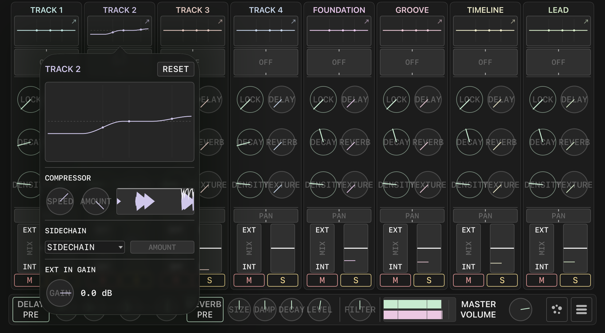
ストリップ
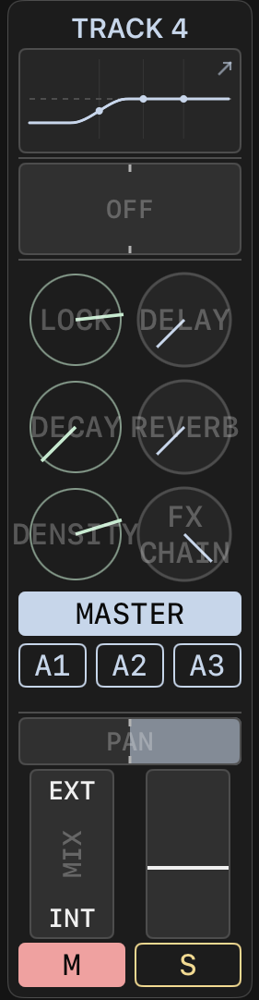
| 名前 | TRACK 1 から 4。ドラムトラックは FOUNDATION、GROOVE、TIMELINE、LEAD です。 |
| EQ サムネイル | EQ カーブを表示します。タップで EQ ポップオーバーを開きます。 |
| FILTER | 中央が OFF、左へ動かすとローパス（20 kHz から 80 Hz へ）、右へ動かすとハイパス（20 Hz から 8 kHz へ）です。中央から 0.04 以内で吸着し、ダブルタップで 0 に戻ります。 |
| LOCK / DECAY / DENSITY | MAIN の同名パラメータと同じです。 |
| DELAY / REVERB / FX CHAIN | 3 つのエフェクトセンド量。各 0 から 1 で、ダブルタップで 0.5 に戻ります。MOD ROUTE でモジュレーションできます。 |
| BUS 選択 | 6 つのノブの下にある MASTER / A1 / A2 / A3 の 4 つのボタンで、LEVEL フェーダーが編集するバスを選びます。選択中のボタンはトラックの色で塗りつぶされます。この選択はプロジェクトに属し、プロジェクトスロットと .honki ファイルに保存されます。再度開くと最後に選んだバスに戻ります。4 つのバスボタンは MIDI Learn と PERFORM に割り当てでき、トリガーするとそのバスを選択します。MIDI Learn モードでは MASTER ボタンが短くなり、右側に FOLLOW の枠が表示されます。FOLLOW をタップしてからコントローラーを動かすと LEVEL FOLLOW が割り当てられ、以後そのコントローラーは、このトラックで現在選択中のバスの LEVEL（MASTER の音量、または A1 から A3 への送り量）を常に操作します。バスを切り替えると操作対象も切り替わります。FOLLOW は MIDI Learn モードのときだけ表示されます。A1 から A3 を選ぶと、LEVEL フェーダーはその AUX バスへの送り量（0 から 2、初期値 0）になり、PAN と MIX は無効になります。M / S は影響を受けません。AUX の信号はモノラルで、取り出し点は COMPRESSOR とサイドチェインコンプレッサーの後、フェーダーと PAN の前です。エフェクトリターンとマスター出力の処理は通りません。TRACK 5 から 8 は左右の平均を使います。A1 から A3 は押した時点で切り替わります。250 ミリ秒以上押してから離すと MASTER に戻り、短く押した場合はそのバスのままです。MASTER は押した時点で働きます。MIXER ページ、MIDI、PERFORM のいずれも同じ規則です。押している間に動かした送り量は、離した後も残ります。 |
| A1 から A3 の出力 | 3 つの AUX バスの物理チャンネルは、SETUP の AUDIO タブの AUX BUS で指定します。未指定は OFF で、他の用途で使用中のチャンネルには IN USE と表示されます。 |
| PAN | TRACK 1 から 4 は等パワーのパン、5 から 8 は左右のバランスです。中央で吸着し、ダブルタップで 0 に戻ります。MOTION、MOD ROUTE、MIDI Learn に対応しています。 |
| MIX | EXT / INT 間のクロスフェードで、0 が INT です。 |
| LEVEL | 0 から 2、初期値 1。横の 2 本のメーターはフェーダー前とフェーダー後で、ソースはオーディオではなくトリガーエンベロープです。BUS で A1 から A3 を選ぶと、その AUX バスへの送り量になります。MIDI Learn と PERFORM では、固定の LEVEL / A1 から A3 LEVEL のほか、LEVEL FOLLOW も割り当てできます。 |
| M / S | M は赤でミュート、S は黄でソロ。0.4 秒長押しで排他ソロになります。 |
信号の順序：ミュート、EQ、FILTER、COMPRESSOR、サイドチェインコンプレッサー、エフェクトセンドポイント、AUX の取り出し点、フェーダー、PAN、マスター出力。DELAY、REVERB、FX CHAIN のセンドポイントはそれぞれ PRE または POST を選べます。マスター出力：エフェクトリターン（FX CHAIN を含む）、マスター FILTER、MASTER VOLUME、ソフトクリップ。PERFORM の LOOPER はエフェクトリターンの後、メインの FILTER の前に入ります。
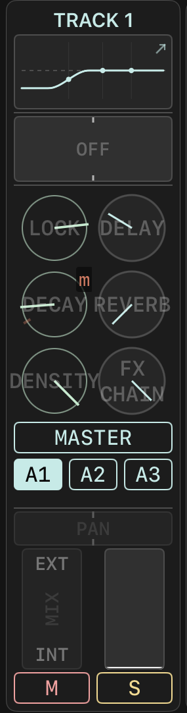
EQ ポップオーバー
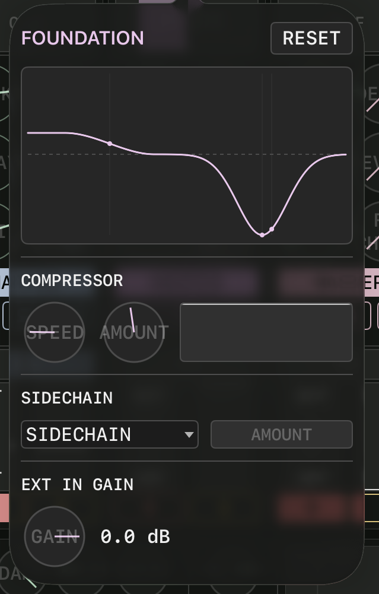
| RESET | ゲインを 1.0、周波数を 200 / 1000 / 4000 Hz に戻します。 |
| EQ カーブ | 3 つの点：LOW 40 から 500 Hz、MID 200 から 5000 Hz、HIGH 1000 から 16000 Hz。ゲインは 0 から 2 です。最大 3 本指で同時にドラッグできます。 |
| COMPRESSOR SPEED | 0 から 1、初期値 0.5。 |
| COMPRESSOR AMOUNT | 0 から 1、初期値 0。 |
| SIDECHAIN | サイドチェインソースのドロップダウンです。他の 7 トラックから選べます。 |
| SIDECHAIN AMOUNT | サイドチェイン圧縮量です。 |
| EXT IN GAIN | 外部入力ゲイン、-60 から +12 dB。 |
EFFECT 列
| DELAY PRE / POST | ディレイセンドポイントの切り替えです。 |
| DELAY LEFT / RIGHT | 左半分はフリータイム 5 ミリ秒から 5 秒、右半分は 16 のテンポ同期値（1/1 から 1/32、付点と 3 連符を含む）です。時間を変えるとテープのように音程が滑らかに変化します。スムージングは 50 ミリ秒です。 |
| DELAY FEEDBACK | 0 から 0.95、初期値 0.35。 |
| DELAY LEVEL | 0 から 1.5、初期値 0.8。 |
| REVERB PRE / POST | リバーブセンドポイントの切り替えです。 |
| SIZE / DAMP / DECAY | 各 0 から 1、初期値 0.5。 |
| REVERB LEVEL | 0 から 1.5、初期値 0.8。 |
| FILTER | マスター出力のフィルターノブです。 |
| レベルメーター | L / R の 2 色、-60 から 0 dBFS、ピークホールド 0.8 秒。 |
| MASTER VOLUME | 0 から 1。 |
| 点のアイコン | FX CHAIN パネルを開きます。いずれかのトラックの FX CHAIN センドが 0 より大きく、少なくとも 1 つのポジションの DRY WET が 0 より大きいとき、アクセントカラーで表示されます。 |
| 3 本線のアイコン | MASTER FX を開きます。 |
FX CHAIN パネル
FX CHAIN は 3 つのポジションを持つセンドエフェクトチェインで、信号はポジション 1、2、3 の順に通ります。パネルのタイトルは FX CHAIN、サブタイトルは「SIGNAL RUNS POSITION 1 TO 2 TO 3」です。
| SEND | 「SEND: PRE」または「SEND: POST」。センドポイントを切り替えます。 |
| RETURN | チェイン全体のリターン量、0 から 1.5、初期値 0.8。 |
| 3 つのポジション | 3 列で、見出しは「INPUT INTO POSITION 1」「THEN POSITION 2」「THEN POSITION 3 OUTPUT」です。 |
| エフェクトメニュー | 各ポジションで GRANULAR、KARPLUS、GLITCH のいずれかを選びます。空の選択肢はなく、上へ移動、下へ移動のボタンもありません。順序を変えるには、各ポジションのメニューで別のエフェクトを選びます。同じエフェクトを複数のポジションに置けます。 |
| DRY WET | ポジションごとに 0 から 1。0 のときは列の見出しに DRY と加わり、その列が半透明になり、そのポジションは信号を処理しません。 |
| 出荷時の状態 | ポジション 1 は GRANULAR で DRY WET 1、ポジション 2 は KARPLUS で DRY WET 0、ポジション 3 は GLITCH で DRY WET 0 です。 |
| エフェクトの変更 | そのポジションのパラメータは初期値に戻り、FREEZE はオフになり、そのポジションの MOTION の記録と MIDI の割り当ては消去されます。DRY WET は保持されます。音は短いフェードアウトとフェードインで切り替わります。 |
パラメータバーには名前だけが表示されます。各パラメータ、DRY WET、RETURN は MOTION、MOD ROUTE、MIDI Learn に対応しています。エフェクトメニュー、FREEZE、HOLD は MIDI Learn のみに対応しています。旧プロジェクトの TEXTURE の設定はポジション 1 に対応します。
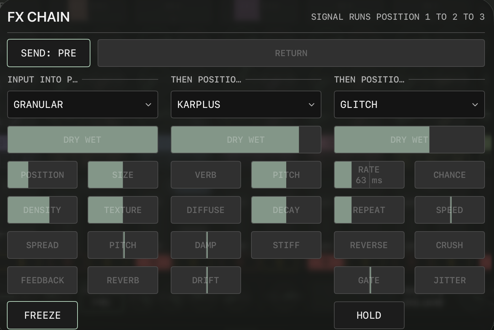
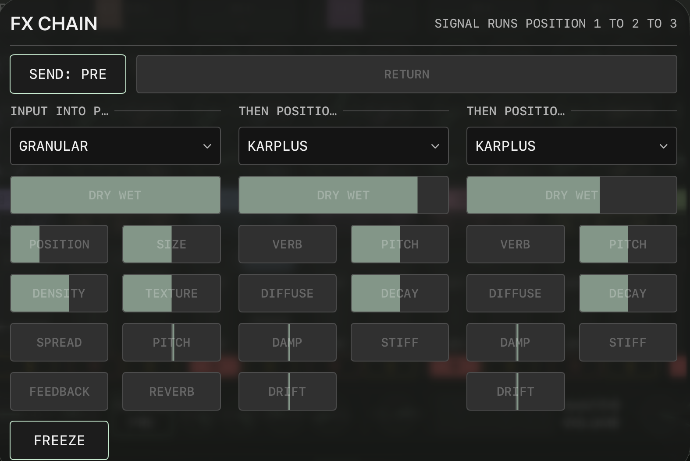
GRANULAR
GRANULAR のグラニュラー合成エンジンが入れ替わり、パラメータ名は下の表のとおりになりました。エフェクト名は GRANULAR のままで、旧プロジェクト、MOTION、MOD ROUTE、MIDI の割り当ては従来の位置をそのまま使います。
| TIME / SIZE | TIME は読み取り位置、SIZE はグレインの長さで、各 0 から 1、初期値 0.5 です。SIZE を最大まで回すとディレイモードになります。 |
| DENSITY / SHAPE | グレインの密度と形状で、各 0 から 1、初期値 0.5 です。 |
| QUALITY | 4 段階：DIRTY TAPE、CLEAN TAPE、VINTAGE DIGITAL、DIGITAL。初期値は DIGITAL で、バーの面に現在の段階名が表示されます。MOTION、MOD ROUTE、MIDI からは従来どおり連続値として変調できます。旧プロジェクトは DIGITAL で読み込まれます。QUALITY を切り替えると FREEZE で保持していた素材は消えます。 |
| PITCH | ±24 半音、中央が 0。 |
| FEEDBACK / REVERB | フィードバックとリバーブの量、初期値 0。 |
| FREEZE | ON / OFF。 |
KARPLUS
互いに結合した 6 本の弦で、左右に 3 本ずつあります。
| VERB | 0 では各弦が独立し、1 ではリバーブに近づきます。 |
| PITCH | 弦の長さです。 |
| DIFFUSE | 拡散量です。 |
| DECAY | 0.05 から 20 秒。0.9 を超えると自己発振します。 |
| DAMP | 中央が 0 で、負の方向はローパス、正の方向はハイパスです。 |
| STIFF | 弦の分散です。 |
| DRIFT | 中央が 0 で、左右チャンネルの音高のずれとランダムなドリフトです。 |
GLITCH
スライスをリピートするエフェクトです。
| RATE | 左半分はフリータイム 2 ミリ秒から 2 秒、右半分は 16 のテンポ同期値で、DELAY と同じです。バーには時間または音価の名前が表示されます。 |
| CHANCE | リピートが起こる確率です。 |
| REPEAT | リピート回数、1 から 16、初期値 5。 |
| SPEED | 中央が 0 で、0.25 倍から 4 倍です。 |
| REVERSE | 逆再生になる確率です。 |
| CRUSH | ビットクラッシュの量です。 |
| GATE | 中央が 0 です。 |
| JITTER | 時間の揺らぎの量です。 |
| HOLD | 押している間だけ作用します。保存されません。 |
MASTER FX
| タイトル | 「1 EFFECT」または「N EFFECTS」と表示されます。エフェクトがないときは「NO MASTER EFFECTS」と表示されます。 |
| エフェクトスロット | 各スロットにバイパス、名前、OPEN、上へ移動、下へ移動、削除の X があります。 |
| ADD EFFECT | 使用できる Audio Unit エフェクトをメーカー別に一覧表示します。 |
7. UTILITY
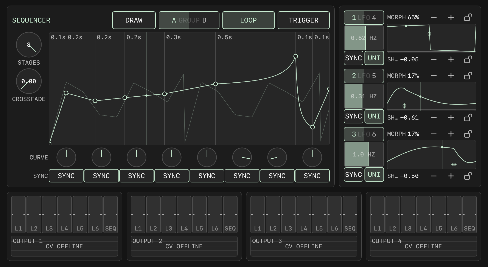
SEQUENCER（8 ステージエンベロープ）
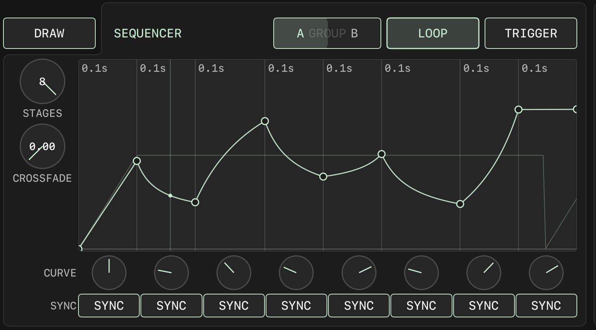
| DRAW | ページ全体の常駐スイッチで、SEQUENCER パネルの左上角に埋め込まれています。押すとオンになり、ボタンの表示が FINISH に変わります。一筆描き終えても自動では終了せず、FINISH を押すまで描画モードが続きます。ページを離れると状態は保持されません。オンの間は SEQUENCER のカーブ領域でフリーハンド描画（8 個のブレークポイント位置でサンプリングし、各ステージの LEVEL に書き込み、描かれなかったステージは元の値を保持）ができ、3 つの LFO パッドにも波形を描けます。 |
| A GROUP B | 編集するグループを A と B で切り替えます。STAGES、START、LOOP、TRIGGER、SYNC は両グループ共通で、カーブと CURVE はグループごとに独立しています。 |
| LOOP | ループ再生です。無効時は最後のステージのレベルで止まります。 |
| TRIGGER | トリガーモードです。 |
| STAGES | ステージ数 1 から 8。タイトル行の塗りつぶし式バーです。 |
| CROSSFADE | 0 から 1。A と B の混合比です。タイトル行の塗りつぶし式バーです。 |
| 編集エリア | 横軸が時間比率、縦軸が 0 から 10 V です。ブレークポイントの縦ドラッグで LEVEL、横ドラッグで DURATION（0.001 から 10 秒、最後のステージは 600 秒まで拡大可）を変更します。開始点のハンドルは左端にあります。最大 4 本指で同時に操作できます。編集中グループの実線、もう一方のグループの細線、混合結果の太線、再生位置が表示されます。 |
| CURVE | 8 個のノブ、各 -1 から +1 で、ダブルタップで 0 に戻ります。STAGES を超えたステージは透明度 0.55 で表示され、調整は可能です。 |
| SYNC | タイトル行にある 1 つのスイッチで、シーケンス全体（A と B の全ステージ）に働きます。オンにするとステージ長がテンポ同期になります。以前のステージごとの 8 個の SYNC ボタンは廃止され、古いステージごとの SYNC の割り当てはこのスイッチを操作します。 |
タイトル行は左から順に：DRAW、A GROUP B、LOOP、TRIGGER、SYNC、STAGES バー、CROSSFADE バー。左側にあった STAGES と CROSSFADE のノブ列はタイトル行に移り、その分 CURVE のノブが大きくなりました。
LFO
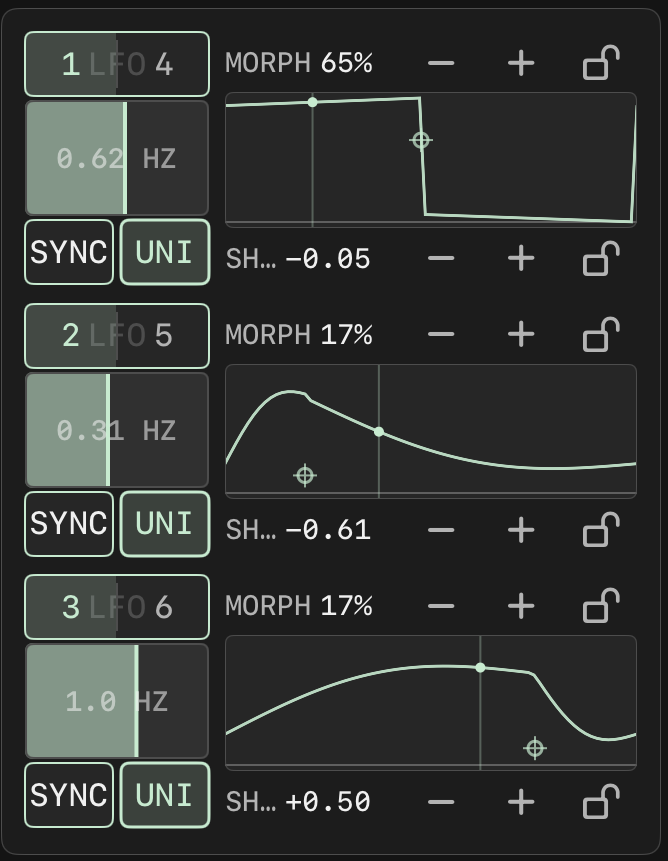
| スロットボタン | 3 つのスロットはそれぞれ LFO 1 / 4、2 / 5、3 / 6 を切り替えます。表示されていない LFO も動作し続けます。 |
| HZ | 0.01 から 20 Hz、対数目盛りで、ダブルタップで 1 Hz に戻ります。MOTION を記録できます。 |
| SYNC | テンポ同期です。/16 から x16 まで 11 の分割があります。 |
| UNI / BI | 単極または双極の出力です。 |
| WAVEFORM | 下段左の塗りつぶし式フェーダーで、0 から 1。以前の MORPH です。MIDI Learn、MOTION の記録、MOD ROUTE に対応します。 |
| SHAPE | 下段右の双極フェーダーで、-1 から +1、中央線があります。MIDI Learn、MOTION の記録、MOD ROUTE に対応します。 |
| 波形表示 | 変調後の実際の波形と再生位置を表示します。ドラッグはできません。以前の XY パッドと軸のロックは廃止されました。 |
| 手描き波形 | DRAW がオンのとき、波形表示の上を左から右へ一筆描くと、指を離した時点で 128 点のカスタム波形としてその LFO に書き込まれます。描かれなかった区間は最も近い描画値で延長されます。カスタム波形がある間は WAVEFORM と SHAPE は働きません。WAVEFORM または SHAPE に触れるとカスタム波形が消え、通常の波形に戻ります。以前の RESET ボタンの代わりです。 |
| S&H / T&H | 上段のモードボタンとステップ数は常に表示され、カスタム波形がないときは暗く表示されて働きません。ボタンをタップすると S&H と T&H を切り替え、初期値は S&H です。S&H は各ステップの開始時の値を保持し、T&H は各ステップの前半は波形に追従、後半は保持します。テーブル自体は変わりません。 |
| ステップ数 | 1 周期を分割するステップ数。- / + で 1 ずつ変更し、上限は 32 です。0 は OFF と表示され、サンプル＆ホールドしません。 |
OUTPUT 1 から 4
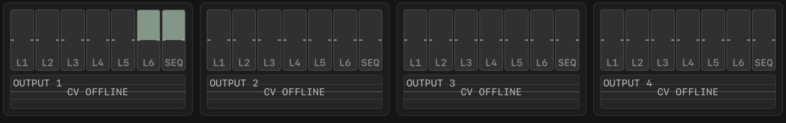
| フェーダー | 順序は L1、L2、L3、SEQ、L4、L5、L6。各 -1 から +1 で、中央で吸着し、ダブルタップで 0 に戻ります。 |
| スコープエリア | ±10 V の出力波形と読み取り値を表示します。CV エンジンが起動していないときは「CV OFFLINE」、チャンネル未指定のときは 0 V の平坦な線を表示します。 |
| 出力範囲 | マトリクス ±10 V、SEQ 0 から 10 V、LFO ±5 V。 |
iPad の CV エンジンは SETUP で有効にする必要があります。各 OUTPUT の物理チャンネルは SETUP の MOD OUTPUT で指定します。
8. PERFORM
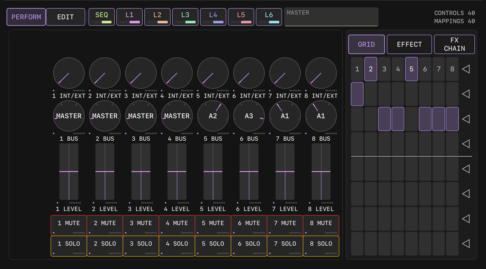
ツールバー
| EDIT | 1 つのボタンで編集モードを切り替えます。編集中は EDIT ON と表示されます。 |
| SEQ、L1 から L6 | 7 つのモジュレーションソースのセルで、リアルタイムのレベルを表示します。セルをタップするとそのソースの編集ポップオーバーが開きます。SEQ には DRAW A / B、CROSSFADE、STAGES、LFO には DRAW、S&H / T&H、STEPS があります。 |
| MASTER | マスター出力のスペクトラムです。タップで MASTER SPECTRUM パネルを開きます。 |
| VISUAL | VISUAL のプレビューと RANDOM ボタン。プレビューをタップすると PERFORM VISUAL ウィンドウ（754 x 420）が開きます。プレビュー、RANDOM、GLIDE TIME、WARP SPEED と、ステーションごとに 1 行ずつ ON / OFF と MIX、BRIGHTNESS、WARP DEPTH、AUDIO のバーがあります。 |
| レベルメーター | MASTER の L / R レベルメーターとクリップランプ。 |
| CONTROLS / MAPPINGS | キャンバス上のコントロール数とマッピング数で、EDIT モードのツールバーに移りました。 |
MASTER SPECTRUM パネル
| スペクトラム | 拡大したマスター出力のスペクトラムで、凡例は LEFT、RIGHT、REFERENCE です。押し続けるとその位置の周波数を読み取れます。短いタップでパネルを閉じます。PERFORM / EDIT を切り替えても閉じます。 |
| LOAD REFERENCE FILE | システムのファイル選択画面を開き、リファレンスにするオーディオファイルを選びます。解析中は「ANALYSING REFERENCE FILE」、完了するとファイル名が表示されます。失敗すると「REFERENCE FILE FAILED TO LOAD」と表示されます。読み込んでいないときは「NO REFERENCE FILE LOADED」と表示されます。 |
| リファレンス線 | ファイルの中で最も音量の大きい部分を解析し、静止したアクセントカラーの曲線としてスペクトラムに重ねて描きます。ツールバーの MASTER スペクトラムにも表示されます。リファレンス線とファイル名は保存され、アプリを再起動しても残ります。 |
| CLEAR REFERENCE | リファレンス線を消去します。 |
| メーター | スペクトラムの右に L / R レベルメーターと GR メーターがあります。GR メーターは MASTER FX チェーンの前後のレベルを比較します。MASTER FX にエフェクトがないときは働きません。 |
| FADER PARAMETER | 上段のドロップダウンで、MASTER FX の書き込み可能なパラメータを「プラグイン名 / パラメータ名」で一覧します。選んだパラメータをパネルのフェーダーで操作します。初期状態では名前に threshold を含む最初のパラメータが自動で選ばれます。手動で選んだものは MASTER FX と一緒に保存されます。 |
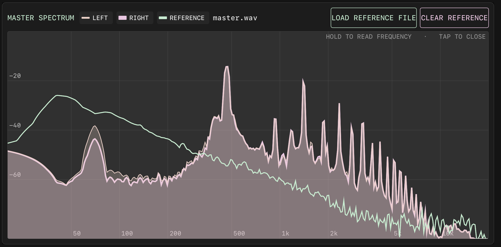
コントロール
| KNOB | ノブです。 |
| BUTTON | LATCH または MOMENTARY。 |
| FADER | VERTICAL または HORIZONTAL。戻りの SPRING を設定できます：OFF、MIN、CENTER、MAX。 |
| PAD（TWO AXIS） | 2 軸モードです。X と Y にそれぞれ - / + ボタンとロックアイコンがあります。ロックした軸は指のドラッグと - / + を受け付けません。MOTION、MOD ROUTE、MIDI はロックの影響を受けません。戻りは MAPPING パネルの SPRING X、SPRING Y で設定し（OFF、MIN、CENTER、MAX）、追加時はオフです。 |
| PAD（FOUR WAY） | 4 方向モードです。全体がタッチ面で、- / + とロックはなく、中央に十字線があり、4 辺に各方向のターゲット名が表示されます。指が中心にあるときは 4 方向とも 0、ある方向へ端まで押すと 1 になります。斜めに押したときは水平と垂直が別々に計算されます。ボタン系のターゲットは半分を超えて押したときにトリガーされます。戻りは SPRING TO CENTER の 1 つのスイッチだけです。 |
| インジケーターの点 | 各コントロールの下の小さな点の数は、そのコントロールのマッピング数で、最大 8 です。 |
| 状態表示 | LEVEL、LEVEL FOLLOW、MASTER VOLUME に割り当てたコントロールにはレベルメーターが表示されます。MUTE と SOLO に割り当てたボタンは実際の状態を表示します。 |
新しいプロジェクトのキャンバスには、初期状態で MIXER テンプレートが適用されます（8 トラックそれぞれに INT/EXT、BUS、LEVEL、MUTE、SOLO）。EDIT モードの CLEAR でキャンバスを空にできます。コントロールがないときは、空の案内と ENTER EDIT MODE ボタンが表示されます。図はスクリーンショット撮影時のレイアウトです。
サイドパネル
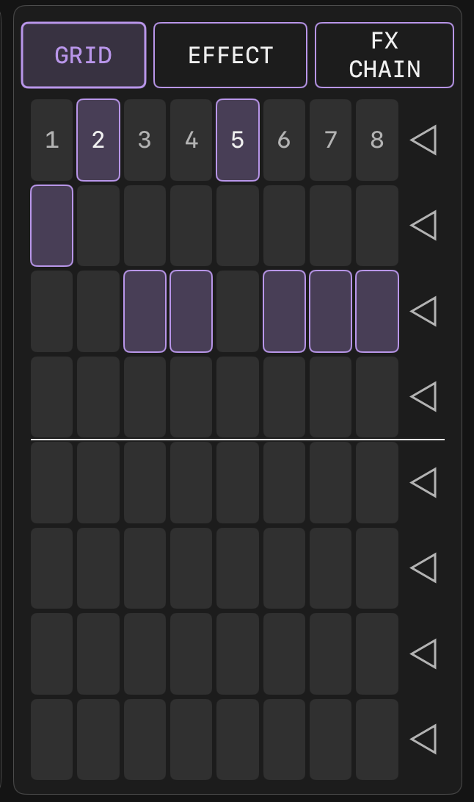
サイドパネルには 2 段に分かれた 6 つのタブがあります：GRID、TRACK、VOICE と SEND、EFFECT、LOOPER。
| GRID | 縦の列がトラック 1 から 8、横の行がセグメント 1 から 8 です。トラック番号は最上段にだけ表示され、4 行目と 5 行目の間に白い線があります。マスをタップすると、そのトラックのそのセグメントを選択します。固定（ロック）はありません。右端の列には行ごとに左向きの三角形があり、タップすると 8 トラックすべてでそのセグメントを選択します。マスと三角形の状態は、選択中と未選択の 2 つだけです。各トラックの再生位置はその列に表示されます。すべてのマスと三角形は MIDI Learn に割り当てできます。上部に SINGLE、SEQUENCER、RANDOM の 3 つのボタンがあり、MAIN ページの同名のボタンと同じ働きです。フォーカストラックは GRID で最後にタップした列で、1pt のアクセント色の枠で示されます。SINGLE と SEQUENCER は押すと待機状態になり、次にタップした列のトラックに適用されます。RANDOM はフォーカストラックに働きます。SINGLE の割り当て先は GLOBAL グループの GRID SINGLE です。 |
| TRACK | LOCK、DENSITY、DECAY の 3 グループで、それぞれ 8 トラック分の 8 本のフェーダーがあります。DENSITY のダブルタップでセグメントの上書き値を消去し、DECAY のダブルタップで 1.0 に戻ります。MOTION を記録できるのは DECAY だけです。 |
| VOICE | 独自のトラック選択があります。音源ボタン SYNTH、SAMPLE、PHYSICAL、AU は割り当てできます（割り当て先の名前は「T1 SOURCE SYNTH」など）。現在の「SEGMENT n MEMORY」を表示し、その下に音源のフェーダーが並びます。SAMPLE ではファイル名、LOAD SAMPLE、ONE SHOT / LOOP / SYNC LOOP、MAGAZINE も表示されます。AU は 8 つのマクロと GLIDE、MODULATION WHEEL です。MAGAZINE はトラックごとに 8 スロットで、各スロットに名前（空のときは EMPTY）、LOAD、CLEAR があり、そのスロットのサンプルに切り替えるのに使います。割り当て先は PREVIOUS SAMPLE、NEXT SAMPLE（空のスロットは飛ばし、端で折り返しません）と SAMPLE 1 から 8 です。 |
| SEND | 上部に FX / AUX の切り替えがあります。FX は DELAY、REVERB、FX CHAIN の 3 グループで、それぞれ 8 トラック分の縦フェーダー 8 本と PRE / POST があります。AUX は A1、A2、A3 の 3 グループです。1 本の指で横になぞると複数のフェーダーをまとめて設定でき、ダブルタップで 0 に戻ります。 |
| EFFECT | DELAY の TIME LEFT、TIME RIGHT、FEEDBACK、LEVEL。REVERB の SIZE、DAMP、DECAY、LEVEL。タブの上部に EFFECT / FX CHAIN の切り替えがあります。 |
| FX CHAIN | 3 つのポジションそれぞれに POSITION n とエフェクト名、DRY WET、そのエフェクトのパラメータが表示されます。GRANULAR には FREEZE、GLITCH には HOLD もあります。このページではエフェクトの種類を変更できず、RETURN もありません。エフェクトの変更は MIXER の FX CHAIN パネルで行います。 |
| LOOPER | REC、PLAY、STOP の 3 つのボタンと状態表示（WAIT FOR BAR、REC n BARS、PLAY n BARS、STOPPED n BARS、EMPTY）。REC を押すと次の小節から録音し、待機中はボタンに REC WAIT と表示されます。LENGTH は 1、2、4、8 小節（BPM 40 未満では半分）。録り終えると自動で PLAY になり、待機中や録音中にもう一度 REC を押すと取り消します。PLAY は小節に合わせて始まり、STOP でライブの信号に戻ります。CROSSFADE バーは LIVE から LOOP まで（等パワー）。LOOP EQ は LOW、MID、HIGH（分割点 300 Hz と 3000 Hz）。LOOP SEND は DELAY、REVERB、FX CHAIN で、送りの位置は全体の PRE / POST に従います。CUE ノブと CUE OUTPUT ドロップダウン（OFF、ステレオペア、モノラル）があり、CUE OUTPUT はアプリ全体の設定で、SETUP の A1 から A3 では CUE が使っているチャンネルが表示されます。チャンネルは合計 5 つで、MASTER のステレオと A1 から A3 です。A1 から A3 のループはそれぞれのバス出力に CROSSFADE を適用して再生され、CUE と EQ は MASTER だけに働きます。マルチトラック録音の master ファイル、スペクトラム、GR メーターにはループが含まれ、各トラックのファイルには含まれません。 |
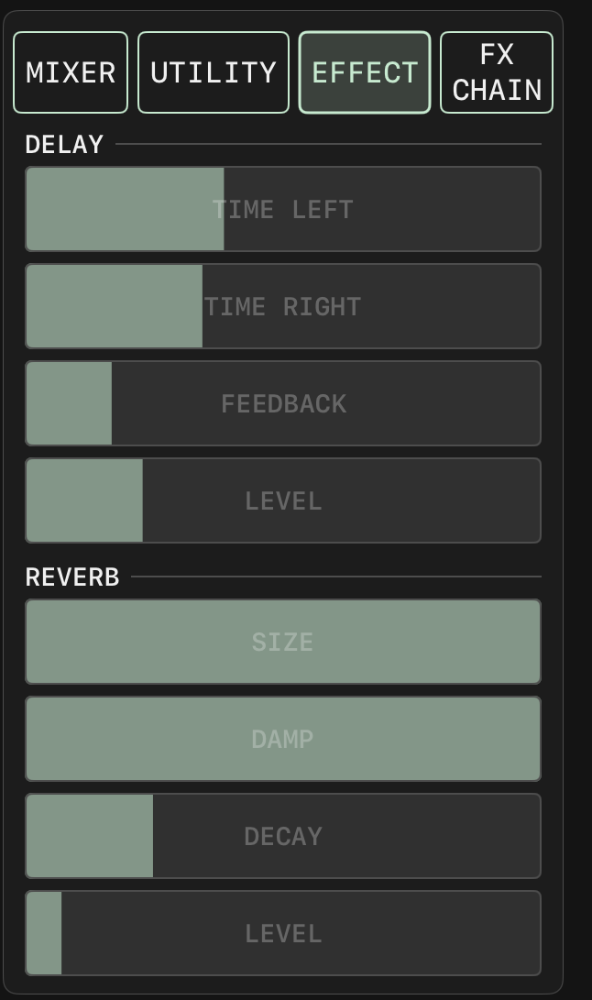
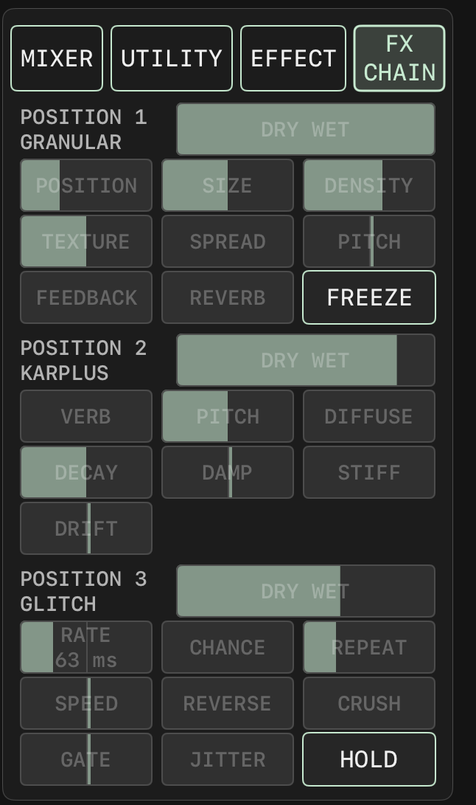
EDIT モード
| + KNOB / + BUTTON / + FADER / + PAD | コントロールを追加します。+ PAD で追加されるのは 2 軸モードの PAD です。 |
| MAPPING | マッピングパネルを開きます。コントロールを 1 つだけ選択しているときに使用できます。キャンバス上でコントロールをダブルタップしても開きます。 |
| DELETE | 2 段階式です。1 回押すと「DELETE?」に変わり、2 秒以内にもう一度押すと選択中のコントロールを削除します。 |
| UNDO / REDO | レイアウト編集専用、32 ステップ。 |
| TEMPLATE | 内蔵レイアウトは 3 つ：SEGMENT VOICE、SENDS、MIXER。MIXER テンプレートは各トラックに下から順に、SOLO、MUTE、LEVEL フェーダー（LEVEL FOLLOW に割り当て済みで、MIXER ページで現在選択中のバスを操作）、4 段の BUS ノブ（MASTER / A1 / A2 / A3。回すと段に吸着し、ダブルタップで MASTER に戻り、MIXER ページと同期）、INT/EXT ノブが並びます。「SAVE CURRENT LAYOUT」は、まず USER n があらかじめ入った名前入力パネルを開きます。名前は変更でき（前後の空白を除き、英字は大文字に変換。空のままなら初期の名前を使用）、SAVE で保存、CANCEL またはパネル外のタップで取り消します。「MANAGE USER TEMPLATES」でユーザーレイアウトの名前変更と削除ができ、削除には確認が必要です。SENDS テンプレートの 3 行のラベルは「n DELAY」「n REVERB」「n FX CHAIN」です。旧レイアウトの「n TEXTURE」のラベルは読み込み時に「n FX CHAIN」に変わり、割り当てはそのままです。 |
| SNAP GRID | グリッド吸着のスイッチです。 |
| CONTROLS / MAPPINGS | EDIT モードのツールバーに、キャンバス上のコントロール数とマッピング数が表示されます。 |
| 選択とドラッグ | コントロールをタップして選択に追加または解除します。複数選択できます。ドラッグで位置を移動し、複数選択のときはまとめて移動します。 |
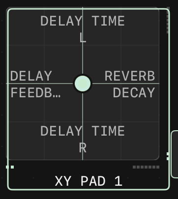
MAPPING パネル
| ヘッダー | MAPPING のタイトル、コントロールの種類、名前欄、CLOSE があります。パネルの背景をタップしても閉じます。BUTTON には MODE（MOMENTARY / LATCH）、FADER には ORIENTATION（VERTICAL / HORIZONTAL）と SPRING、PAD には TWO AXIS / FOUR WAY と戻りの設定があります。 |
| マッピングスロット | 左の列 SLOTS で、コントロールごとに 8 個です。各スロットにターゲット名、CLEAR SLOT、REVERSE RANGE、範囲バー、現在の有効値のバーがあります。2 軸モードの PAD は 8 個のスロットを 2 軸で共用し、各スロットの X / Y ボタンで軸を選びます。 |
| DIRECTIONS | 4 方向モードの PAD では UP、DOWN、LEFT、RIGHT の 4 行になり、方向ごとにマッピングは 1 つです。もう一度割り当てると前のものが置き換わり、未割り当ては EMPTY と表示されます。各行に CLEAR DIRECTION、REVERSE RANGE、範囲バーがあります。 |
| TWO AXIS / FOUR WAY | PAD のモードを切り替えます。その PAD にマッピングがある場合、1 回目のタップで確認の表示になり、2 秒以内にもう一度タップすると切り替わります。切り替えるとその PAD のマッピングはすべて消去され、UNDO で戻せます。名前は保持されます。FOUR WAY に切り替えると値は中心に戻り、戻りがオンになります。TWO AXIS に戻すと戻りはオフになります。 |
| MIDI OUT | OFF / ON、CHANNEL、CC / NOTE。PAD には MIDI OUT X / Y の 2 組があります。SETUP の CV / MIDI で選んだ MIDI 出力デバイスから送られ、NOTE モードでは note on / off を送ります。SETUP の MIDI CONTROL にすべての PERFORM MIDI OUT が一覧され、CLEAR と CLEAR ALL ができます。 |
| ターゲットのグループ | MIXER、VOICE、SEGMENT、FX、GLOBAL、CHROMA、PARTICLE、MESH、FEEDBACK。グループの下に T1 から T8 のトラックボタンがあり、グローバルなグループではグレー表示になります。同じコントロールで使用済みのターゲットには印が付きます。GLOBAL グループには UN-SOLO ALL、MULTI（MAIN ページ表示中のみ働く）、GRID SINGLE、PREVIOUS PAGE / NEXT PAGE（端で折り返さない）、PREVIOUS SLOT / NEXT SLOT と PREVIOUS BANK / NEXT BANK（実際にプロジェクトスロットを切り替え、端で折り返さない）、PREVIOUS PROGRAM / NEXT PROGRAM もあります。VOICE グループには TRACK DELAY と TRACK DELAY SYNC、MIXER グループにはドラムの各レーンの MUTE もあります。3 つ目のセンドの割り当て先の名前は FX CHAIN です。MIXER グループの各トラックの SEND FX CHAIN、FX グループの FX CHAIN RETURN と FX CHAIN PRE/POST、LOOPER の LOOPER SEND FX CHAIN（以前のバージョンでは TEXTURE と表示。既存の割り当ては影響を受けません）。 |
| MIXER グループ | トラックごとに：MUTE、SOLO、A1 から A3 LEVEL、LEVEL、LEVEL FOLLOW、MIX、PAN、サイドチェイン量、3 つのエフェクトセンド、FILTER、BUS（連続値の 4 段。KNOB に割り当てるとノブが自動的に 4 段表示になります）、BUS MASTER / BUS A1 / BUS A2 / BUS A3（ボタン型。トリガーするとそのバスを選択し、BUTTON に割り当てたときの点灯は MIXER ページで現在選択中のバスを反映します）。 |
| FX グループ | DELAY、REVERB、FX CHAIN（RETURN）、FX CHAIN 1、FX CHAIN 2、FX CHAIN 3、PRE / POST。各 FX CHAIN ポジションには 3 種類のエフェクトのパラメータ、MIX、および EFFECT、FREEZE、HOLD が含まれます。EFFECT はトリガーされるたびに次のエフェクトに切り替わり、順序は GRANULAR、KARPLUS、GLITCH です。HOLD は押している間だけ作用します。 |
KNOB では SEQUENCER、RANDOM、PRE / POST スイッチを選べません。マッピングにモジュレーション量の欄はありません。モジュレーション量は MOD ROUTE で設定します。トランスポートの MOD をオンにしてコントロールをタップします。PERFORM コントロールの MOD ROUTE のソースは SEQ と LFO 1 から 6 の 7 つだけで、ENV は使用できません。2 軸と 4 方向の PAD は、2 つの軸それぞれにモジュレーション量の組を持ちます。どの種類のコントロールも MIDI Learn に割り当てでき、ラベルには CC 番号、N 番号、または PB が表示され、pickup 方式で引き継ぎます。MIDI Learn モードでは PAD に 2 つの角が表示され、左上の角が縦軸、右下の角が横軸です。
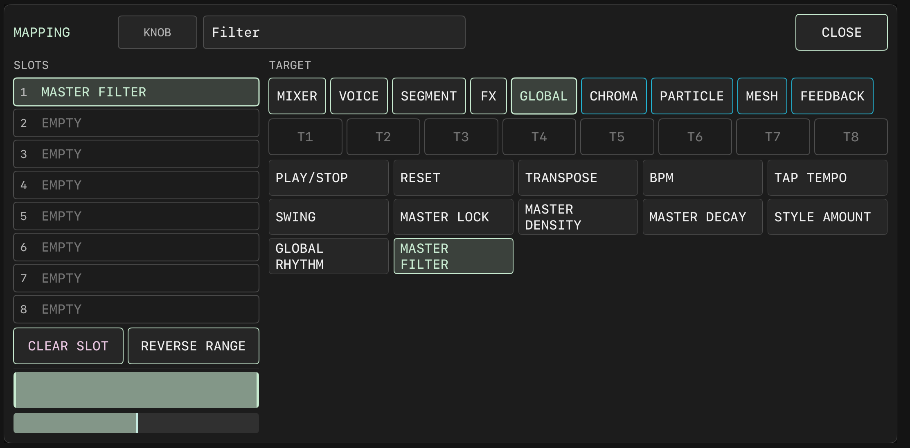
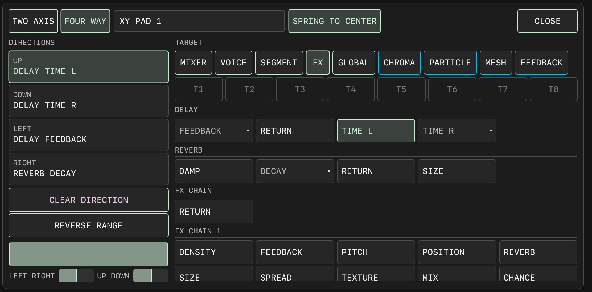
9. MOD ROUTE
MOD ROUTE は、1 つのパラメータに複数のモジュレーションソースを同時に受けさせます。指がコントロール上にある間は手動の値が MOTION の再生に置き換わります。MOD ROUTE は作用し続け、MOTION に加算されます。再生を停止しても MOD ROUTE は作用し続けます。
開き方
- トランスポートの MOD を押して MOD モードに入ります。モジュレーションできるコントロールに実線のアクセントカラーの枠が表示されます。
- 枠のあるコントロールをタップすると、そのパラメータの MOD ROUTE パネルが開き、触覚フィードバックがあります。このときコントロールの値は変わりません。
- もう一度 MOD を押すと終了します。MOD モードと MIDI Learn モードは同時にオンにできません。アプリの起動時は毎回 MOD はオフです。
旧バージョンの長押しで開く方法は廃止されました。
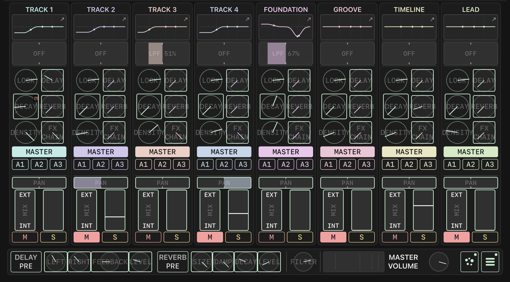
モジュレーションできる場所
- MAIN パラメータ列の DECAY。
- VOICE の音源パラメータ、およびサンプルの開始点、終了点、GRAIN SHAPE。
- MIXER の各トラック：DELAY、REVERB、FX CHAIN のセンド、サイドチェイン量、PAN、MIX、LEVEL、および A1 から A3 の送り量。FILTER、LOCK、DENSITY、M、S、MIXER ページの DECAY は対応していません。
- MIXER の EFFECT 列：DELAY の LEFT、RIGHT、FEEDBACK、LEVEL。REVERB の SIZE、DAMP、DECAY、LEVEL。FX CHAIN の RETURN、各ポジションのパラメータと DRY WET。
- UTILITY の LFO スピード、WAVEFORM、SHAPE。
- フレーズエディタの TRACK DELAY。
- PERFORM キャンバスのすべてのコントロールと、サイドパネルの EFFECT と FX CHAIN の各横バー。サイドパネルの GRID ページは対応していません。
- VISUAL の MIX とパラメータバー。
変調量はノブの移動量で計算されます。対数スケールのターゲット（ディレイタイム、グレインのサイズや密度など）では、変調の幅は数値そのものではなくノブの移動距離に従います。VISUAL の RANDOM はトリガーの割り当て先として使えます。第 10 章を参照してください。
パネル
| タイトル | MOD ROUTE。XY pad では軸名が加わります。 |
| ソースボタン | 16 個、4 行：OFF、SEQ、LFO 1 から 6、ENV 1 から 8。OFF はすべてを消去します。 |
| ボタンの動作 | 選択中で量が 0 でないソースをタップ：量が 0 に戻り、ソースは選択されたままです。選択中で量が 0：+50% に設定します。未選択で量が 0 でない：選択します。未選択で量が 0：選択して +50% に設定します。 |
| AMOUNT | -100 から +100%。タイトルに「ソース名 AMOUNT」と表示され、ソースが未選択のときは「SELECT A SOURCE」と表示されます。 |
| CLEAR MOTION? | そのパラメータに MOTION の記録があるとき、Y / N の行が表示されます。 |
| 閉じる | パネルの外をタップ、Y / N に答える、または MOD をオフにします。パネルを閉じても MOD モードはオンのままです。 |
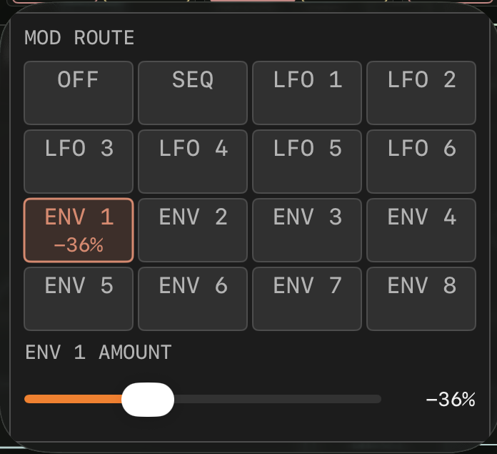
ソース
| SEQ | UTILITY のエンベロープ出力、0 から 1。 |
| LFO 1 から 6 | UNI / BI の設定に従ってユニポーラまたはバイポーラになります。 |
| ENV 1 から 8 | 各トラックのトリガーエンベロープ、0 から 1。そのトラックの現在の音源（SYNTH、SAMPLE、PHYSICAL、AU）に応じて読み取ります。トラックが音を出していなくてもエンベロープは動き続けます。空のサンプラー、空の MULTI パッド、外部入力を使う PHYSICAL、インストゥルメント未設定の AU スロットでも ENV は出力されます。DECAY を最大にすると、SAMPLE、PHYSICAL、AU のトラックではエンベロープがバイパスされ ENV は 0 になります。SYNTH のトラックではそのまま動き続けます。自分のトラックのパラメータをモジュレーションすることもできます。ENV は UTILITY の OUTPUT マトリクスの列ではありません。PERFORM コントロールでは ENV は使用できず、ボタンがグレー表示になります。 |
設定済みのパラメータは右上にソースの印が表示されます。m は MOTION、s は SEQ、1 から 6 は LFO、e1 から e8 は ENV です。ソースが多いときは「+」で省略されます。
MIDI Learn との関係
- MOD と MIDI は同時にオンにできません。一方をオンにすると他方はオフになります。
- MIDI の割り当ては SETUP でのみ削除できます。もう一度 learn すると古い割り当てが置き換わります。
10. VISUAL
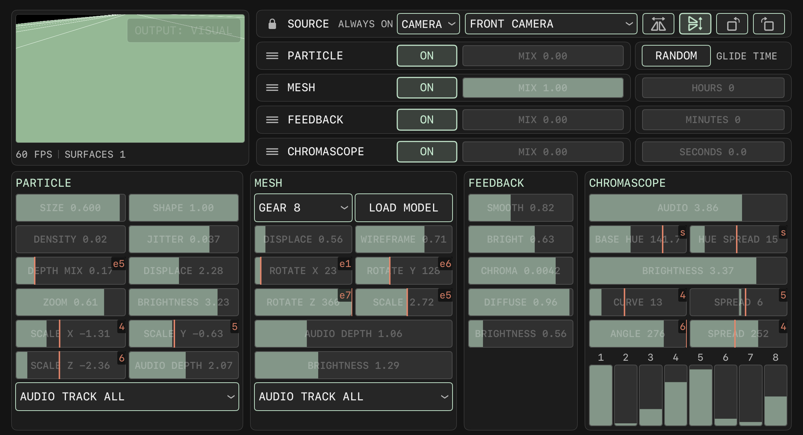
SOURCE 列とステーション列
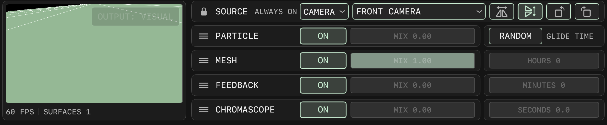
| SOURCE / ALWAYS ON | ソースの状態表示です。ソースを回転しているときは、ALWAYS ON の代わりに回転角度（90、180、270）が表示されます。 |
| ソースメニュー | CAMERA、PHOTO、VIDEO。 |
| レンズメニュー | カメラデバイスを選びます。カメラがないときは NO CAMERA FOUND と表示されます。すでに選ばれているデバイスをもう一度選ぶとカメラが再起動します。カメラは 1080p 30 fps で、フロントカメラは鏡像です。 |
| PHOTOS / FILES | PHOTO と VIDEO ソースのときに表示され、写真ライブラリまたはファイルから読み込みます。読み込み後はファイル名が表示されます。写真は長辺 1920 まで、動画はループ再生で無音です。 |
| FLIP H / FLIP V | 水平と垂直の反転です。 |
| 左回転 / 右回転 | 押すごとにソースを 90 度ずつ、反時計回りまたは時計回りに回転します。以前ここにあった解像度表示はなくなりました。 |
| ステーション列 | 4 つのステーション CHROMASCOPE、PARTICLE、MESH、FEEDBACK。左側のハンドルをドラッグして順序を変更します。ON / OFF の切り替えで、初期状態では CHROMASCOPE だけが有効です。すべて無効のときは元のソースを出力します。各ステーションには WARP DEPTH（0 から 2、初期値 0）もあり、MIX の前でオプティカルフローによる変位で画像をゆがめます。 |
| MIX | 0 から 1。初期値は CHROMASCOPE 0.75、その他は 1 です。右上にモジュレーションソースのマークが表示されます。4 本の MIX バーは指 1 本の動きでまとめて設定できます。いずれかの MIX バーから指を置き、上下に動かして他の行に移ると、横方向の位置がその行の値になります。途中で通過した行も設定されます。MIDI Learn 中と MOD ROUTE モード中は使えません。 |
| 状態列 | NN FPS、SURFACES n、EXTERNAL DISPLAY、RENDERER OFFLINE に続けて、ソースの状態を表示します。読み込みの失敗は PHOTO LOAD FAILED、VIDEO LOAD FAILED、MODEL READ FAILED、MODEL LOAD FAILED として赤く表示されます。カメラでは CAMERA OFF、CAMERA STARTING、CAMERA WAITING、CAMERA NO FRAMES（動作中に 2 秒以上映像が届かない）、または CAMERA IN USE や NO CAMERA INPUT のような停止理由が表示されます。赤いカメラ状態をタップするとカメラに再接続します。PERMISSION DENIED はタップできず、システム設定でカメラの許可が必要です。動画では VIDEO FAILED または VIDEO STALLED が表示されます。 |
| VISUAL ON / OFF | プレビュー左上のスイッチです。OFF にすると画面、カメラ、動画が止まり、各プレビューは黒地に「VISUAL OFF」と表示され、外部ディスプレイは黒になり、録音時に VISUAL の出力は書き出されません。このスイッチはアプリ全体の設定で、SETUP PRESET に保存されます。画面は 30 fps 固定です。 |
VISUAL のパラメータ値と MOD ROUTE のルーティングはバンクに保存されません。その代わり端末側に保存され、次回起動時に復元されます。復元されるのは 4 つのステーションのパラメータ、CHROMASCOPE の AUDIO、GLIDE TIME、ステーションの順序とオン / オフ、MESH の内蔵モデル、FLIP、回転、選択中のカメラです。読み込んだ写真、動画、.obj モデル、MOTION と MOD ROUTE の値、外部ディスプレイのミラー設定は復元されません。ソースが PHOTO または VIDEO だった場合は CAMERA として復元されます。MOD ROUTE のルーティングも端末側に保存されます。
パラメータパネル
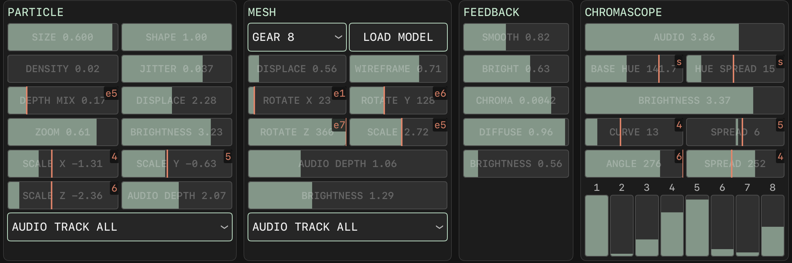
CHROMASCOPE
CHROMASCOPE はトラックごとに 1 層、最大 8 層を描きます。各層はそのトラック自身の波形から描かれるため、TRACK 1 から 8 がそれぞれ自分の色の帯を持ちます。LEVEL フェーダーが 0 のトラックには層がなく、残りの層が詰めて並ぶので、色、角度、カーブの段差は実際に表示されている層の数で数えられます。
| AUDIO | 0 から 5、初期値 1。層を駆動するトラックのオーディオに掛ける倍率で、0 でオーディオ駆動が止まります。3 までは単純な倍率、3 から 5 では波形の負の半周期も持ち上げられ、画面がさらに埋まります。以前の EFFECT と MICROPHONE のスイッチに代わるものです。 |
| BASE HUE | 0 から 333、初期値 166.5。最初の層の色相です。 |
| HUE SPREAD | 0 から 100、初期値 50。層全体に広げる色相の幅で、層ごとに等間隔でずれます。 |
| BRIGHTNESS | 0 から 4、初期値 1.5。 |
| CURVE | 0 から 100、初期値 50。最初の層のカーブです。 |
| SPREAD（CURVE の隣） | -100 から +100、初期値 0、中央線付き。層が進むごとに CURVE に加算され、結果は 0 から 100 の範囲に収まります。 |
| ANGLE | 0 から 360、初期値 0。最初の層の角度です。 |
| SPREAD（ANGLE の隣） | 0 から 360、初期値 45。層が進むごとに ANGLE に加算されます。 |
| LEVEL 1 から 8 | トラックごとの縦フェーダー 8 本、0 から 1、初期値 1。そのトラックの層の強さを決め、0 で層が消えます。ダブルタップで 1 に戻ります。8 本のフェーダーは指 1 本の横方向の動きでまとめて設定でき、横位置でフェーダーを選び、縦位置で値を決めます。 |
PARTICLE
| SIZE | 0.001 から 1。 |
| SHAPE | 0 から 1。順に円、四角、三角、六角形、菱形、星、リングで、1 はランダムです。形は段階の間を連続的に変化し、MOD ROUTE でモジュレーションできます。 |
| DENSITY | 0.01 から 2。 |
| JITTER | 0 から 0.05。 |
| DEPTH MIX | 0 から 1。 |
| DISPLACE | 0 から 5。 |
| ZOOM | -1 から +1。 |
| BRIGHTNESS | 0 から 4。 |
| SCALE X / Y / Z | 各 -3 から +3。 |
| AUDIO DEPTH | 0 から 4。変位量に (1 + 音量 x 深度) を掛けます。 |
| AUDIO TRACK | ALL または TRACK 1 から 8。 |
MESH
| モデルメニュー | 100 個の内蔵モデル。サムネイル付きで、初期値は球体です。 |
| LOAD MODEL | .obj ファイルを読み込みます。 |
| DISPLACE | 0 から 5。 |
| WIREFRAME | 0 から 1。 |
| ROTATE X / Y / Z | 各 0 から 360。 |
| SCALE | 0.1 から 5。 |
| AUDIO DEPTH / BRIGHTNESS / AUDIO TRACK | PARTICLE と同じです。 |
FEEDBACK
| SMOOTH | 平滑化の量です。 |
| BRIGHT | 輝度の減衰です。 |
| CHROMA | 0 から 0.005。 |
| DIFFUSE | 拡散の量です。 |
| BRIGHTNESS | 出力の輝度です。 |
| AUDIO DEPTH / AUDIO TRACK | PARTICLE と同じです。AUDIO DEPTH は 0 から 4、AUDIO TRACK は ALL または TRACK 1 から 8。 |
RANDOM と GLIDE TIME
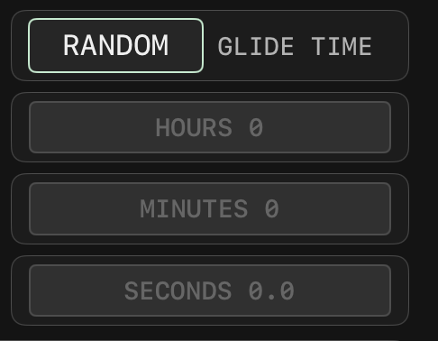
RANDOM と GLIDE TIME はページ上段、4 つのステーション列の右、MIX バーの隣にあります。どちらも VISUAL ページ全体に働き、ステーションのオン・オフには関係なく使えます。
| RANDOM | オンになっているステーションの連続パラメータをすべて、RANGE で設定した区間内のランダムな値にします。MIX バー、WARP SPEED、GLIDE TIME は変わらず、オフのステーションは対象外です。区間の初期値は RANGE 追加前の RANDOM の範囲と同じで、たとえば各ステーションの BRIGHTNESS は 1 から 4、FEEDBACK の SMOOTH と BRIGHT はそれぞれ 0 から 0.3、4 つのステーションの WARP DEPTH はそれぞれ 0 から 0.3 です。SMOOTH、BRIGHT、WARP DEPTH の区間の上限は最大 0.3 です。区間をどう設定しても、SMOOTH と BRIGHT の合計は 0.3 以下、4 つの WARP DEPTH の合計は 0.3 以下になります。MESH がオンで内蔵モデルを使っているときは、別の内蔵モデルにも即座に切り替わります。読み込んだ .obj モデルは置き換えられません。変わるのはベース値だけで、MOTION と MOD ROUTE の値はそのままです。PERFORM のツールバーと PERFORM VISUAL ウィンドウの RANDOM も同じ区間を使います。RANDOM は MIDI コントローラーから押せます：LEARN をオンにし、RANDOM をタップしてからコントローラーを操作します。PERFORM ページにもボタン型のコントロールとして置けます（GLOBAL グループの VISUAL RANDOM）。MOD ROUTE からも RANDOM を起動できます。MOD モードで VISUAL ページまたは PERFORM のツールバーの RANDOM をタップすると、OFF と 15 のソースを持つ MOD ROUTE パネルが開き、AMOUNT の位置に「TRIGGER >= 5V」と表示されます。ソースが下から 5 V を超えるたびに 1 回起動します。この設定はアプリ全体で共通です。 |
| RANGE | VISUAL ページの RANDOM の右にあるスイッチで、各パラメータが RANDOM で選ばれる区間を設定します。オンにすると、RANDOM の対象になるバーがその場で区間バーに変わり、バーの面にパラメータ名と「下限 - 上限」が表示されます。MIX や WARP SPEED など RANDOM の対象でないバーは変わりません。CHROMASCOPE の LEVEL 1 から 8 は 8 本の縦の区間バーになり、1 本の指で横になぞって設定できます。ドラッグすると、押した位置に近い方の端だけが動き、もう一方の端を越えません。ダブルタップで初期の区間に戻ります。もう一度 RANGE を押すと終了し、バーは元の操作に戻ります。区間はほかの VISUAL パラメータと同じく端末側に保存され、バンク、プロジェクト、SETUP PRESET には含まれません。RANGE は VISUAL ページだけにあり、PERFORM VISUAL ウィンドウにはありません。RANGE 自体は MIDI や PERFORM に割り当てできません。RANGE があるときは、GLIDE TIME の見出しは時間のセルの上に表示されます。 |
| GLIDE TIME | MINUTES（0 から 999）と SECONDS（0 から 59）の 2 つのセル。横にドラッグして値を決めます。ドラッグせずにタップすると、キーボードで数値を入力できます。合計は 2 つの和です。パラメータは現在の値からランダムな値へこの時間をかけて滑らかに移り、その間 GLIDE TIME にはカウントダウンが表示されます。MESH のモデルは即座に切り替わります。MOD ROUTE、MIDI Learn、PERFORM ページが扱うのは合計の秒数で、最大 86400 秒です。 |
| WARP SPEED | 0 から 1、初期値 1。以前の MAX SPEED です。RANDOM では変わりません。 |
オーディオ駆動とモジュレーション
- PARTICLE と MESH は 8 トラックのミキサー入力点での RMS に VOL を掛け、ミュートとソロを適用した値で駆動されます。CHROMASCOPE は各トラックの波形を自分の層のために読み取ります。
- MOD ROUTE に対応するパラメータには、各ステーションのパラメータ、WARP DEPTH、WARP SPEED、CHROMASCOPE の LEVEL フェーダー 8 本、AUDIO、GLIDE TIME が含まれます。変調できないもの：ステーションのオン / オフと順序、AUDIO TRACK、MESH のモデルと LOAD MODEL。
- MIDI が書き込むのはベース値です。
外部ディスプレイ
- USB-C または AirPlay ミラーリングで接続すると、外部ディスプレイに映像出力が表示されます。VISUAL ページに留まる必要はありません。
- Mac では 2 台目のディスプレイを接続すると、そのディスプレイに映像出力の全画面ウインドウが自動で開きます。このウインドウはマウスとキーボードを受け付けません。VISUAL ページに留まる必要はありません。ディスプレイを外すと自動で閉じます。
- iPad に外部ディスプレイを接続しているときも、ファイルと写真ライブラリの選択画面は iPad 側に表示されます。
- 初めてカメラを使うとき、システムがカメラの使用許可を求めます。
11. SETUP
SETUP は中央に表示されるパネルで、上部にタイトル、MANUAL ボタン、CLOSE があり、パネルの外をタップしても閉じます。MANUAL を押すとこの取扱説明書（英語、日本語、繁体字中国語）がブラウザで開きます。パネルは AUDIO、CV / MIDI、CLOCK、MIDI CONTROL、KEYBOARD、SYSTEM の 6 つのタブに分かれ、次に開いたときは前回のタブに戻ります。多くのセクションに INFO ボタンがあり、タップすると説明が開きます。
右上の SETUP PRESET ボタンでメニューが開きます。SAVE CURRENT SETUP で現在の設定を保存し、その下に保存済みのプリセットが並び、タップで読み込みます。MANAGE PRESETS では RENAME と DELETE ができます。プリセットの内容：CV OUT、MIDI OUT、INPUT COMP、サンプルレート、BUFFER、VIDEO の録画設定、SETTINGS の一部、MOD OUTPUT のチャンネル、MIDI と KEYBOARD の割り当て、TRACK ORDER、VISUAL のオン / オフ。
AUDIO
| AUDIO DEVICE | DEVICE ドロップダウンでマルチチャンネルのオーディオデバイスを選びます。未選択のときは No Device と表示されます。デバイスを選ぶと CV 出力がすぐに始まります。 |
| SAMPLE RATE | 44.1 kHz または 48 kHz、初期値 44.1 kHz。 |
| BUFFER | FRAMES は AUTO、256、512、1024、2048 から選べ、隣の ACTUAL に実際の値が表示されます。INFO もあります。実際の値はほかの音楽アプリによって決まる場合があります。AUTO から別の値に戻すにはアプリの再起動が必要です。 |
| MAIN OUT | 現在のシステムのオーディオルート名を表示し、横にシステムのルート選択があります。 |
| AUX BUS | A1 から A3 にそれぞれ物理チャンネルまたは OFF を指定します。他の用途で使用中のチャンネルには IN USE と表示されます。 |
| PARALLEL OUT | トラックごとのパラレル出力で、AUDIO L、AUDIO R、MONO を選べます。信号はフェーダー後、エフェクト前です。 |
| EXTERNAL INPUT | トラックごとに外部入力を指定します：OFF、単一のチャンネル、またはステレオのチャンネルの組。 |
| INPUT COMP | 入力レイテンシー補正、0 から 250 ミリ秒、0.1 ミリ秒刻み。1.4.29 より前のバージョンから更新した後は、もう一度校正してください。 |
CV / MIDI
| MIDI OUTPUT | DEVICE ドロップダウン（None を含む）と、すべてのトラックを一度に設定する MIDI CHANNEL ALL TRACKS があります。 |
| TRACK ROUTING | 8 トラック各 1 行で、列は MIDI CHANNEL、PITCH CONTROL CHANGE、ENVELOPE CONTROL CHANGE、DRUM NOTE（TRACK 5 から 8 のみ）、PITCH CV CHANNEL、VOLTS（1V または 1.2V）、ENVELOPE CV CHANNEL です。右上に CLEAR ALL があります。CV チャンネルは重複できず、使用中のチャンネルを選ぶと両者が入れ替わります。MIDI チャンネルは重複できます。 |
| MOD OUTPUT | UTILITY の OUTPUT 1 から 4 の物理チャンネルを割り当てます。トラックの CV で使用中のチャンネルは選べません。別の MOD OUTPUT で使用中のチャンネルを選ぶと両者が入れ替わります。 |
| BUCHLA PULSE | SPIKE OFF / ON と WIDTH（ミリ秒）。 |
| ENV DELAY | トラックごとのエンベロープディレイ、単位はミリ秒。CV と MIDI 出力の両方に効きます：エンベロープ CV はピッチ CV より後、エンベロープの MIDI CC はピッチの MIDI CC より後に送られます。0 では同時に送られます。 |
CLOCK
| CLOCK IN | SOURCE：INT / MIDI / CV。DIV MULT：/4、/2、x1、x2、x4 で、外部ソース使用時のみ使用できます。CV INPUT でチャンネルを選び、SIGNAL に信号、STATUS に状態が表示されます。BPM 20 から 300。MIDI クロックは 24 PPQN で、2 秒間信号がないと途切れたとみなします。SOURCE が CV のときは RESET IN の行もあります。再生中にパルスを受けると再生位置が先頭に戻ります。 |
| TRANSPORT | SOURCE が MIDI のときだけ表示されます。ANY SOURCE（初期値）は有効なすべての MIDI 入力からのスタート、ストップ、コンティニューを受け付けます。CLOCK ONLY はクロックを送っているデバイスからだけ受け付けます。 |
| 外部クロックへの追従 | シーケンサーは再生速度を細かく調整して受信中の MIDI クロックに追従し、再生位置が飛ぶことはありません。BPM 表示には受信中のテンポが出ますが、プロジェクトの BPM は書き換えられず保存もされません。SOURCE を INT に戻すと元の BPM に戻ります。 |
| CLOCK OUT | CHANNEL、OUT DIV、OUT WIDTH（ミリ秒）。iPad 版の CLOCK OUT と RESET OUT はメインのトランスポートに従います。 |
| RESET OUT | CHANNEL と OUT WIDTH（1 から 50 ミリ秒、初期値 10）。次のときにパルスを 1 つ出力します：停止中からの PLAY（MIDI Start を含む）、RESET ボタンまたは PERFORM の RESET、RESET IN の受信、再生中の MIDI Start。停止中は 0 V です。この端末の CV 設定だけを使います。 |
| MIDI CLOCK OUT | OFF / ON。MIDI 出力デバイスがないときはグレー表示になります。 |
MIDI CONTROL
| CURRENTLY LEARNING | 待機中の MIDI Learn のターゲットを表示します。待機中は CANCEL ボタンがあります。 |
| MIDI INPUT DEVICES | MIDI 入力デバイスの一覧で、複数選択できます。 |
| MIDI BINDINGS | 割り当て済みの一覧です。各項目で MODE（LATCH / MOMENTARY）、TAKEOVER（JUMP / PICKUP）、SCALE（LINEAR / EXP / LOG）、MIN と MAX（0 から 100%、10% 刻み）を設定でき、REMOVE で個別に削除できます。見出しに ALL PICK UP（すべてを PICKUP にする）と CLEAR ALL があります。PICKUP はパラメータの現在値を基準に引き継ぎます。一覧はアプリ全体で共通で、プロジェクトスロットによって変わりません。3 つ目のセンドは一覧に「Track N — Send FX Chain」「FX Chain — Return」「Looper — Send FX Chain」と表示されます。 |
| PAGE NAVIGATION | PREVIOUS PAGE と NEXT PAGE の 2 行で、未設定のときは NOT ASSIGNED と表示されます。LEARN を押して 10 秒以内に CC または Note を送ると設定され、待機中は CANCEL、設定済みは REMOVE で削除できます。ページは端で折り返しません。 |
| PERFORM MIDI OUT | PERFORM のコントロールの MIDI OUT 設定を一覧し、項目ごとの CLEAR と CLEAR ALL ができます。 |
KEYBOARD
KEYBOARD タブでは、外部キーボードのキーを機能に割り当てます。見出しは KEYBOARD MAPPINGS です。キーボードが接続されていないときは「No hardware keyboard is connected.」と表示されます。
| LEARN | LEARN を押し、外部キーボードのキー（修飾キーを含む）を押してから機能を選びます。そのキーにすでに割り当てがあるときは「This key is already mapped to X. Choosing a function replaces it.」と表示され、機能を選ぶと置き換わります。 |
| 割り当て項目 | 各項目に CHANGE / DONE、REMOVE、MODE（MOMENTARY または LATCH）があります。MOMENTARY：ボタン型の機能は押している間オン、離すとオフ。連続値の機能は押している間最大値、離すと最小値。LATCH：押すたびに最大値と最小値を切り替えます。 |
| CLEAR ALL | すべてのキーの割り当てを消去します。 |
| 適用範囲 | テキスト欄に入力中のときを除き、すべてのページで働きます。割り当てたキーは、同じキーの内蔵ショートカットに優先します。KEYBOARD の割り当てはアプリ全体で共通で、SETUP PRESET に保存されます。 |
SYSTEM
| RECORDING LOCATION | Documents/Recordings に固定です。ファイルアプリでのパスは「On My iPad / HONKI / Recordings」。Sessions はマルチトラック録音、Samples はサンプル録音です。以上は iPad の場合です。Mac 版ではこの行は RECORDING FOLDER で、現在のフォルダのフルパス（未設定のときは NOT SET）を表示し、CHOOSE でフォルダを選び、RESET で設定を消去します。Mac には録音フォルダの初期値がなく、未設定のまま録音しようとすると先にフォルダの選択画面が開き、キャンセルすると録音しません。 |
| RECORDING TRACKS | マルチトラック録音で書き出す項目を選びます。第 14 章を参照してください。 |
| VIDEO RECORDING | 録音と同時に録画する 2 つのスイッチです。第 14 章を参照してください。 |
| GENERATE VELOCITY | トラックごとに 1 から 127 の範囲バーがあり、自動生成のベロシティ範囲を設定します。RESET もあります。初期範囲 80 から 110 では強拍が強調され、最大値を超えることがあります。範囲を変更すると、強拍は範囲の上側に収まり、最大値を超えません。 |
| TRACK ORDER | 表示順を 1-4 / 5-8 または 5-8 / 1-4 から選び、表示されるトラック番号もそれに従います。変わるのは表示だけで、トラックの内容は変わりません。アプリ全体の設定で、SETUP PRESET に保存され、.honki ファイルには保存されません。MIDI と KEYBOARD の割り当てはそれに合わせて対応し直されます。 |
| DIAGNOSTICS | 状態の表示と EXPORT LOG。 |
12. MIDI Learn
開始と終了
- トランスポートの MIDI または Cmd+L で開始します。割り当てできるコントロールに破線の枠が表示されます。XY pad には 2 つの角が表示され、左上の角が Y 軸、右下の角が X 軸です。
- もう一度 MIDI または Cmd+L を押すと終了します。MOD を押しても終了します。ESC では MIDI Learn モードは終了しません。
- 1.3.4 以降に追加された割り当て先：MIXER の PAN、FX CHAIN の各パラメータ、DRY WET、RETURN、エフェクトの種類（トリガーごとに次の種類へ切り替え）、FREEZE、HOLD（押している間だけ作用）。
- 1.4.9 で追加された割り当て先：MIXER の MASTER / A1 / A2 / A3 バスボタン、LEVEL FOLLOW。
- 1.4.10 から 1.4.29 で追加された割り当て先：BPM の PROBABILITY、TRACK DELAY と TRACK DELAY SYNC、LFO の WAVEFORM と SHAPE、SEQUENCER 全体の SYNC、<< / >>（PREVIOUS / NEXT PROGRAM）、ドラムレーンの MUTE。PERFORM と KEYBOARD には GLOBAL グループの新しい割り当て先もあります。第 8 章を参照してください。
手順
- コントロールをタップして待機状態に入ります。SETUP の CURRENTLY LEARNING にターゲットが表示されます。待機中のコントロールは黒地にアクセント色の枠で、WAITING と表示されます。
- 10 秒以内に MIDI メッセージを送ります。別のコントロールをタップするとターゲットが切り替わります。
- 最初に一致したメッセージで割り当てが完了します。ボタンは MOMENTARY、その他は連続値で、カーブの初期値は LINEAR です。既存の割り当ては置き換えられます。新しい割り当ての TAKEOVER は、連続値が PICKUP、ボタンが JUMP になります。
メッセージの種類
| 割り当て可能 | CC、Note、Pitch Bend。 |
| 割り当て不可 | Program Change。Aftertouch と SysEx は無視されます。 |
割り当ての動作
| MODE | LATCH または MOMENTARY です。 |
| TAKEOVER | JUMP は新しい値に直接移動し、PICKUP は現在の値を通過してから引き継ぎます。 |
| SCALE | LINEAR、EXP、LOG。 |
| MIN / MAX | マッピング範囲です。 |
| ページ切り替え | 6 つのページにそれぞれ 1 つのメッセージを割り当てできます。 |
割り当てはアプリ全体で 1 組を共有し、プロジェクトスロットを切り替えても変わりません。.honki ファイルの書き出しには含まれますが、読み込み時は無視されます。CLOCK IN、ENV DELAY、RECORDING TRACKS、GENERATE VELOCITY、MOD OUTPUT のチャンネルなどの SETTINGS 系の設定も、スロットの切り替え、読み込み、CLEAR、UNDO で保持されます。各パラメータに持てる割り当ては 1 つだけです。
13. Motion
| 再生 | トランスポートの MOTION をタップして再生を切り替えます。初期状態はオン（黄色）です。手動で操作している間は手動の値が優先され、離すと記録値に戻ります。 |
| 録音 | MOTION を 1 秒押し続けると録音を開始します（赤）。録音中にタップすると停止します。録音を開始すると再生は自動でオンになります。 |
| 記録の条件 | 録音中、再生中、指がコントロール上にある、の 3 つが同時に成り立つときだけ記録します。 |
| 書き込みのタイミング | 録音の停止時または再生の停止時に書き込みます。 |
| サンプルレート | 30 Hz、sample-and-hold。 |
| レーンの長さ | トラックのパラメータ：セグメントごとに 64 マスのレーン 1 本。エフェクトと VISUAL のパラメータ：グローバルな 4 小節のレーン。 |
| 記録できる | ミキサー（PAN を含む）、DECAY、ハーモニクス、音源パラメータ（kick、サンプル、PHYSICAL。AU トラックは不可）、エフェクト（FX CHAIN のパラメータ、DRY WET、RETURN を含む）、VISUAL、PERFORM コントロール。TRACK DELAY、LFO の WAVEFORM と SHAPE、PERFORM サイドパネルの TRACK タブの DECAY も記録できます。 |
| 記録できない | LOCK、DENSITY、wavetable の選択、MODEL、POLYPHONY、LOOP、REVERSE、FREEZE、HOLD、音源の切り替え、AU パラメータ。TRACK DELAY SYNC も記録できません。 |
| 1 つのパラメータの消去 | トランスポートの MOD をオンにしてそのコントロールをタップし、MOD ROUTE パネルの CLEAR MOTION? で Y を選びます。 |
| MOTION を消去するその他の操作 | セグメントの CLEAR、トップバーの CLEAR、FX CHAIN のポジションのエフェクト変更（そのポジションのみ消去）。すべての MOTION を一度に消去するボタンはありません。 |
| 表示 | 記録のあるコントロールにはインジケーターの線が表示されます。 |
| 保存 | bank とともに保存され、undo できます。 |
14. 録音
マルチトラック録音
| 開始 | PLAY を押し、Y / REC? / N で Y を選びます。開始前にストレージの空き容量を確認します。録音できる時間が 10 分未満のときは「Low Storage」が表示され、RECORD ANYWAY または CANCEL を選べます。1 分未満のときは「Not Enough Storage」が表示され、録音は始まりません。 |
| 停止 | 赤い点の録音停止ボタンを押して Y を選びます。アプリをバックグラウンドに移しても録音は停止しません。システムのオーディオが中断されるとファイルはいったん終了し、復帰後に新しいセッションが始まります。サンプルレートを変更しても新しいセッションが始まります。 |
| 連続性 | 長時間の録音で途中が抜けることはなくなりました。ディスクへの書き込みを分散し、MASTER と外部入力のファイルが後回しにならないようにしています。外部入力のルーティング変更やフォアグラウンドへの復帰などでセッション中にオーディオエンジンが再起動した場合、止まっていた時間はすべてのファイルに無音として埋められるため、ファイルの長さは揃ったままで、映像の録画も同じファイルに続けて書かれます。ルーティング変更で増減する外部入力のファイルは、進行中のセッションの中で追加または終了されます。 |
| Recording Stopped | ファイルを作成または書き込みできないとき、ストレージがいっぱいのとき、ファイルが WAV の最大サイズに達したときは録音が停止し、REC が解除され、「Recording Stopped」というタイトルの通知に原因が表示されます。たとえば「Recording stopped because a recording file could not be written. The audio recorded up to that point has been saved.」や「Recording could not start because the recording files could not be created.」などです。それまでに書き込まれた内容はセッションフォルダに残ります。再生は続きます。録音中、録音できる時間が 2 分未満になると「LOW STORAGE: ABOUT N MINUTES OF RECORDING LEFT」と表示されます。30 秒未満になると録音は正常に終了し、「Recording Stopped」が表示されます。ストレージがいっぱいで止まったときは、説明が「Disk full.」で始まります。 |
| RECORDING TRACKS | SETUP の SYSTEM タブで、書き出す項目を 16 個のスイッチで選びます：TRACK 1 から 8、MASTER、EXTERNAL INPUT、AUX 1、AUX 2、AUX 3、DELAY、REVERB、FX CHAIN。出荷時は TRACK 1 から 8、MASTER、EXTERNAL INPUT がオンです。ALL ON、ALL OFF、LOAD DEFAULT、SAVE DEFAULT もあります。選択はプロジェクトとともに保存されます。プロジェクトに記録がない場合は、SAVE DEFAULT で保存した既定値を使います。録音中は変更できません。下に 1 分あたりの書き込み量の目安が表示されます。すべてオフのときは「Nothing selected. Recording is unavailable.」と表示され、Y を選んでも再生のみになります。 |
| ファイル | WAV（32 ビット浮動小数点）：track1 から track4 はモノラル、track5 から track8 はステレオ、master はステレオ。aux1 から aux3 はモノラル。delay と reverb はステレオで、エフェクトリターンの信号です。取り出し点はマスター FILTER と MASTER VOLUME の前です。EXTERNAL INPUT がオンのとき、外部入力のルーティングがあるトラックは trackN_ext.wav も保存します。トラックの取り出し点はフェーダー後です。 |
| VIDEO RECORDING | SETUP の SYSTEM タブに RECORD APP SCREEN と RECORD VISUAL OUTPUT の 2 つのスイッチがあり、初期値はどちらも OFF です。設定はデバイスに保存され、プロジェクトには含まれません。録音中は変更できません。録画は録音と同時に始まり、同時に終わります。動画は同じセッションフォルダに保存されます。 |
| AppScreen.mp4 | RECORD APP SCREEN がオンのとき、アプリの画面を録画します。マイクは使いません。開始時にシステムの同意ダイアログが表示されます。拒否しても録音には影響しません。アプリ画面の録画は iPad 版だけです。Mac 版で録画できるのは VISUAL の出力だけです。 |
| VisualOutput.mp4 | RECORD VISUAL OUTPUT がオンのとき、VISUAL の出力画面を録画します：H.264、1280 x 720、30 fps、縦横比を保って縮小し黒帯を加え、MASTER の音声（AAC 192 kbps）付きです。映像エンジンが起動していないときは自動で起動します。VISUAL が OFF のときは録画しません。失敗したときは同じフォルダに VisualOutput.error.txt が書き出されます。 |
| 場所 | Recordings/Sessions/日付-時刻/。同じ秒に重複したときは -2、-3 が付きます。iPad ではファイルアプリの On My iPad / HONKI / Recordings から取得します。Mac では SETUP で選んだ録音フォルダ内の Sessions に保存されます。 |
| ヘッダー | 100 ミリ秒ごとに更新され、中断してもファイルは読み込めます。 |
サンプル録音（VOICE の RECORD）
| ソース | マスター出力です。 |
| 長さ | 最長 120 秒です。 |
| 停止後 | そのトラックのサンプルとして自動で読み込まれます。 |
| ファイル | Recordings/Samples/トラック番号_タイムスタンプ.wav、ステレオ 32 ビット浮動小数点です。 |
15. ショートカット
iPad では外部キーボードが必要です。SETUP の KEYBOARD タブで割り当てたキーは、同じキーの内蔵ショートカットに優先します。
| 1 から 6 | タブを切り替えます。編集オーバーレイが開いているときは TRACK 1 から 4 と DRUMS の切り替えになります。 |
| Space | 再生 / 停止。録音の確認を含みます。 |
| Shift+Space | 再生のみ、録音しません。 |
| Cmd+L | MIDI Learn のオン / オフ。 |
| Cmd+Z | 取り消し。 |
| Cmd+Shift+Z | やり直し。 |
| ESC | 編集オーバーレイを閉じます。 |
タッチ：フレーズ編集オーバーレイを下へ 80pt を超えてスワイプすると閉じます。